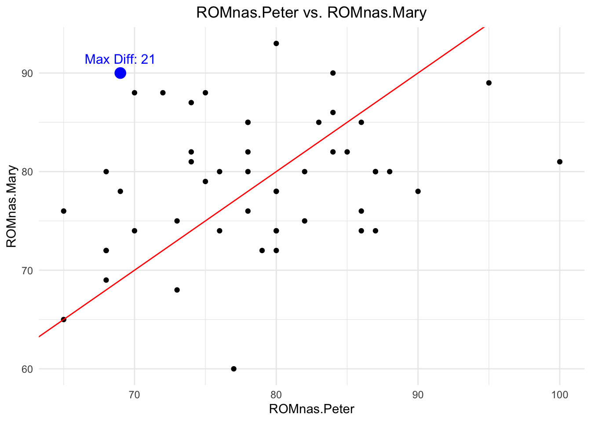
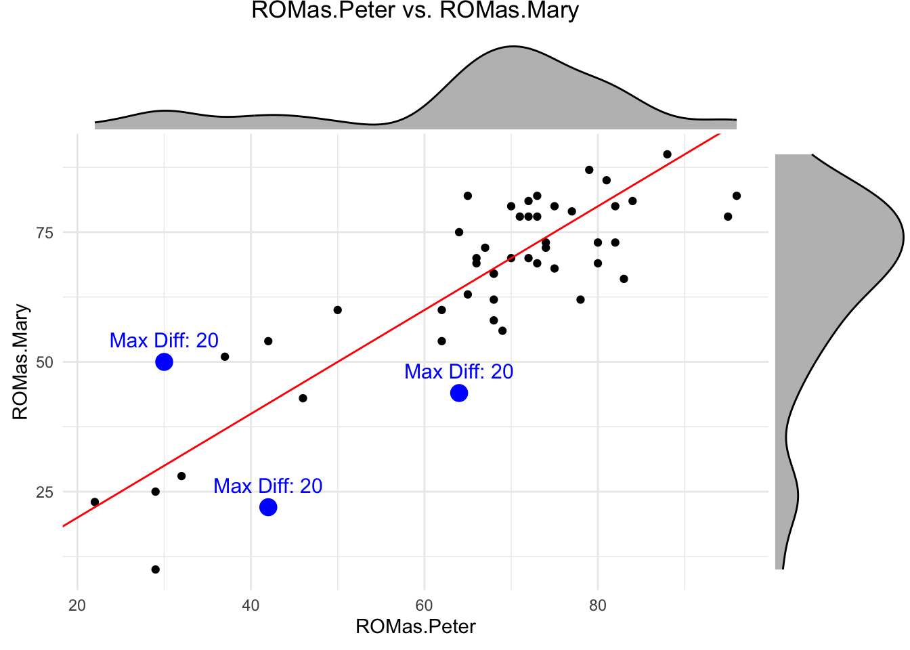
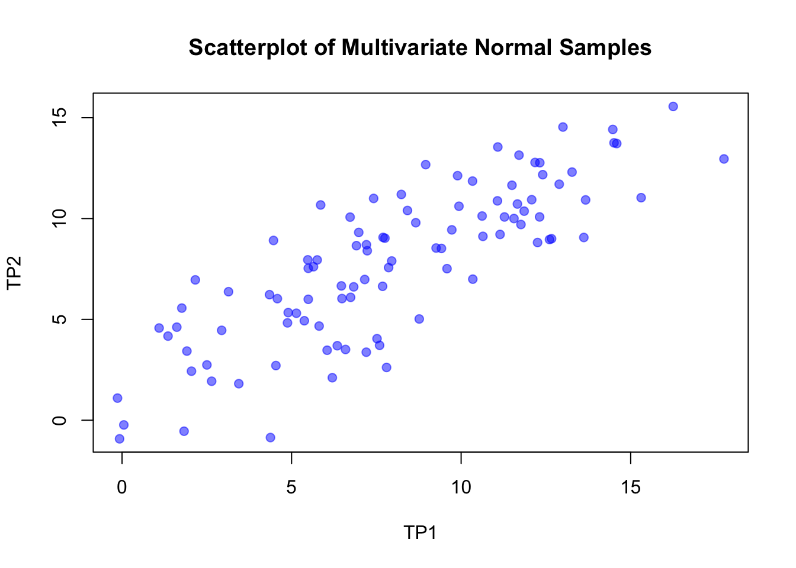
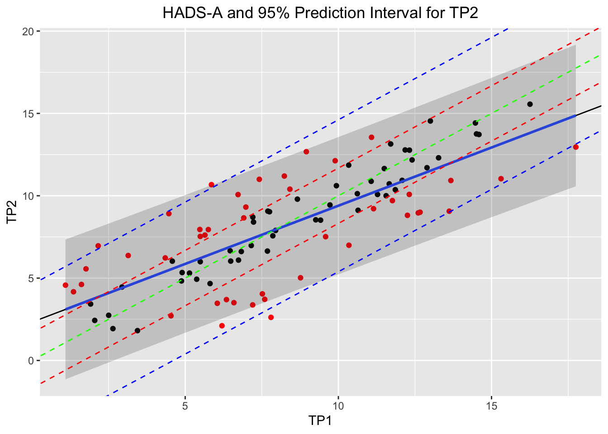
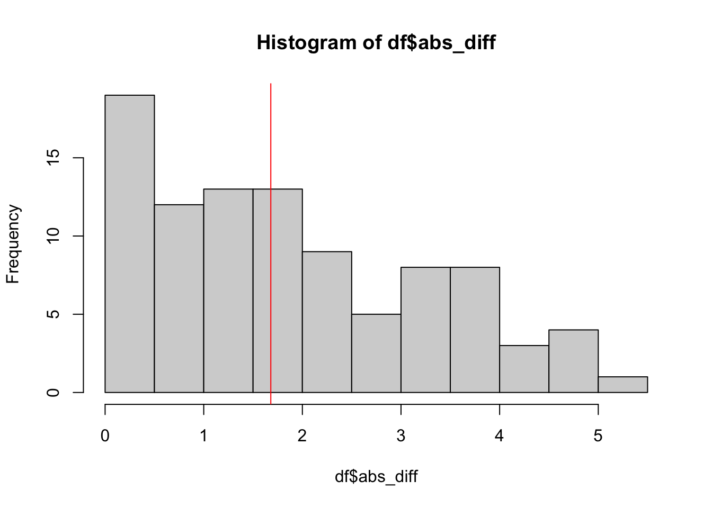
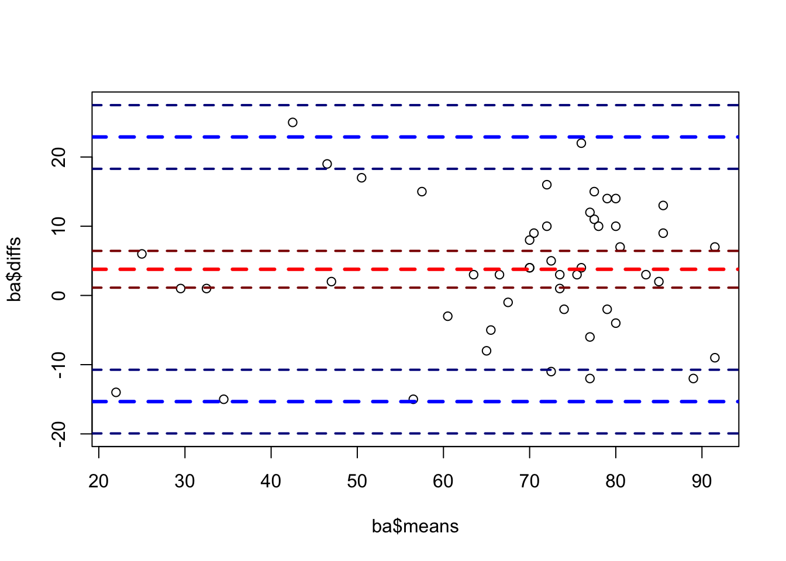
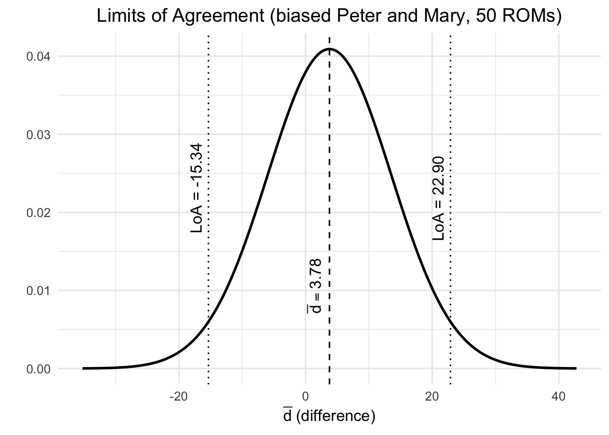
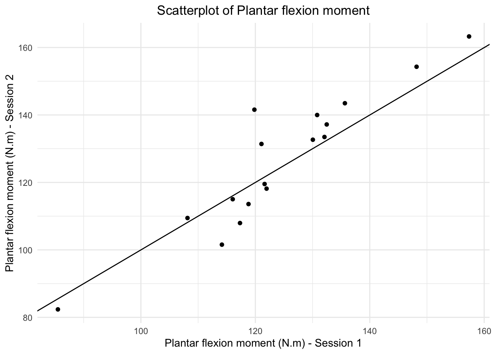

Chapter 2 Reliability and Validity
For this chapter we refer to the book Measurement in Medicine.
I invite you to read the introductory chapters 1 and 2 about concepts, theories and models, and types of measurement.
In general, when conducting a measurement of any sort (laboratory measurements, scores from questionnaires, etc.), we want to be reasonably sure
- that we actually measure what we intend to measure; (validity; chapter 6 in the book);
- that the measurement does not change too much if the underlying conditions are the same (reliability; chapter 5 in the book); and
- that we are able to detect a change if the underlying conditions change (responsiveness; chapter 7 in the book); and
- that we understand the meaning of a change in the measurement (interpretability; chapter 8 in the book).
In this video, Kai jump starts you on reliability and validity.
2.1 Reliability
You can watch this video to get started.
Imagine, you measure a patient (pick your favorite measurement), for example, the range of motion (ROM) of the shoulder.
- If you are interested in how similar your measurements are in comparison to your colleagues, you are trying to determine the so-called inter-rater reliability.
- If you are interested in how similar your measurements are when you measure the same patient twice, you are trying to determine the so-called intra-rater reliability.
Assuming there is a true (but unknown) underlying value (of Range of Motion, ROM), it is clear that measurements will not be exactly the same. Possible influences (potentially) causing different results are:
- the measurement instrument itself,
- the patient (e.g., mood/motivation),
- the examiner (e.g., mood/focus, influence on patient, interpretation of decision rules),
- the environment (e.g., the room temperature).
Note that the true score is defined in our context as the average of all measurements if we would measure repeatedly an infinite number of times (p.98). In this sense, one can measure the true score (in principle, not in practice) arbitrarily well.
2.1.1 Peter and Mary’s ROM measurements
The data can be found here. We randomly select 50 measurements from Peter and Mary in 50 different patients, plot their measurements and annotate the absolutely largest one(s). At first the not affected shoulder (nas) and then the affected shoulder (as).
library(pacman)
p_load(tidyverse, readxl)
# Read file
url <- "https://raw.githubusercontent.com/jdegenfellner/Script_QM2_ZHAW/main/data/chapter%205_assignment%201_2_wide.xls"
temp_file <- tempfile(fileext = ".xls")
download.file(url, temp_file, mode = "wb") # mode="wb" is important for binary files
df <- read_excel(temp_file)
head(df)## # A tibble: 6 × 5
## patcode ROMnas.Mary ROMnas.Peter ROMas.Mary ROMas.Peter
## <dbl> <dbl> <dbl> <dbl> <dbl>
## 1 1 90 92 88 95
## 2 2 82 88 82 90
## 3 3 82 88 57 59
## 4 4 89 89 82 81
## 5 5 80 82 48 40
## 6 6 90 96 99 85## [1] 155 5# As in the book, let's randomly select 50 patients.
set.seed(123)
df <- df %>% sample_n(50)
dim(df)## [1] 50 5# "as" = affected shoulder
# "nas" = not affected shoulder
df <- df %>%
dplyr::mutate(diff = abs(ROMnas.Peter - ROMnas.Mary)) # Compute absolute difference
max_diff_point <- df %>%
dplyr::filter(diff == max(diff, na.rm = TRUE)) # Find the row with the max difference
df %>%
ggplot(aes(x = ROMnas.Peter, y = ROMnas.Mary)) +
geom_point() +
geom_point(data = max_diff_point, aes(x = ROMnas.Peter, y = ROMnas.Mary),
color = "blue", size = 4) + # Highlight max difference point
geom_abline(intercept = 0, slope = 1, color = "red") +
theme_minimal() +
ggtitle("ROMnas.Peter vs. ROMnas.Mary") +
theme(plot.title = element_text(hjust = 0.5)) +
annotate("text", x = max_diff_point$ROMnas.Peter,
y = max_diff_point$ROMnas.Mary,
label = paste0("Max Diff: ", round(max_diff_point$diff, 2)),
vjust = -1, color = "blue", size = 4)
## [1] 7.2## [1] 0.2403213The red line represents the line of equality (\(y=x\)). If the measurements are exactly the same, all points would lie on this line (\(\rho=1\)). The blue point represents the measurement with the largest absolute difference in measured Range of Motion (ROM) values between Peter and Mary from the randomly chosen 50 people. Note that the maximum difference in all 155 patients is even higher with 35 degrees.
The first simple measure of agreement we could use is the (Pearson) correlation, which measures the strength and direction of a linear relationship between two variables. But correlation does not exactly measure what we want. If there was a bias (e.g., Mary systematically measures 5 degrees more than Peter), correlation would not notice this (exercise 1). It actually is too optimistic about the agreement since it only cares about the linearity and not about a potential bias: \(r=0.2403213\) which indicates a weak positive correlation. Higher values of Peter’s measurements are associated with higher values of Mary’s measurements. But: Knowing Peter’s measurement does not help us to predict Mary’s measurement at such a low correlation (exercise 2). So, on the not affected shoulder (nas), agreement is really bad.
What about the affected shoulder (as)?
library(ggExtra)
df <- df %>%
mutate(diff = abs(ROMas.Peter - ROMas.Mary)) # Compute absolute difference
max_diff_point <- df %>%
dplyr::filter(diff == max(diff, na.rm = TRUE)) # Find the row with the max difference
p <- df %>%
ggplot(aes(x = ROMas.Peter, y = ROMas.Mary)) +
geom_point() +
geom_point(data = max_diff_point, aes(x = ROMas.Peter, y = ROMas.Mary),
color = "blue", size = 4) + # Highlight max difference point
geom_abline(intercept = 0, slope = 1, color = "red") +
theme_minimal() +
ggtitle("ROMas.Peter vs. ROMas.Mary") +
theme(plot.title = element_text(hjust = 0.5)) +
annotate("text", x = max_diff_point$ROMas.Peter,
y = max_diff_point$ROMas.Mary,
label = paste0("Max Diff: ", round(max_diff_point$diff, 2)),
vjust = -1, color = "blue", size = 4)
# Add marginal histograms
ggMarginal(p, type = "density", fill = "gray", color = "black")
## [1] 7.78## [1] 0.8516653## [1] 1.22In the affected side, the average absolute difference is even larger (\(7.78\)) with a maximum absolute difference of \(37\) degrees (on the whole sample of \(155\) patients), but the correlation is much higher (\(r=0.8516653\)). See Figure 5.2 in the book.
This is an occasion for using the correlation coefficient even though the marginal distributions are not normal: There are much more measurements in the higher values around \(80\) than below, say, \(60\). But the correlation coefficient makes sense for descriptive purposes.
In this case, knowing Peter’s measurement does (at least somewhat) help us to predict Mary’s measurement (see below).
2.1.2 Intraclass Correlation Coefficient (ICC)
One way to measure reliability is to use the intraclass correlation coefficient (ICC).
This measure is based on the idea that the observed score \(Y_i\) consists of the true score (ROM) (\(\eta_i\)) and a measurement error (for each person). The proportion of the true score variability to the total variability is the ICC.
In the background one thinks of a statistical model from the Classical Test Theory (CTT). There is
- a true underlying score \(\eta_i\) (for each patient \(i\)) and
- an error term \(\varepsilon_i \sim N(0, \sigma_i)\) which is the difference between the true score and
- the observed score \(Y_i\).
\[Y_i = \eta_i + \varepsilon_i\]
It is assumed that \(\eta_i\) and \(\varepsilon_i\) are independent: (\(\mathbb{C}ov(\eta_i, \varepsilon_i)=0\)). This is a convenient assumption because now we know (see here) that the variance of the observed score \(Y_i\) is just the sum of the variance of the true score \(\eta_i\) and the variance of the error term \(\varepsilon_i\):
\[\mathbb{V}ar(Y_i) = \mathbb{V}ar(\eta_i) + \mathbb{V}ar(\varepsilon_i)\] \[\sigma_{Y_i}^2 = \sigma_{\eta_i}^2 + \sigma_{\varepsilon_i}^2\]
We want most of the variability (i.e. how much scores in our relevant population vary) in our observed scores \(Y_i\) to be explained by the true but (directly) unobservable scores \(\eta_i\). The measurement error \(\varepsilon_i\) should be be comparatively small (and of course on average \(0\)). If it is large, we are mostly measuring noise or at least not what we want to measure.
How do we get to the theoretical definition of the ICC?
If you either pull two people with the same true but unobservable score \(\eta\) out of the population or measure the same person twice and the score (\(\eta\)) does not change in between, we can define reliability as correlation between these two measurements:
\[Y_1 = \eta + \varepsilon_1\] \[Y_2 = \eta + \varepsilon_2\]
\[cor(Y_1, Y_2) = cor(\eta + \varepsilon_1, \eta + \varepsilon_2) = \frac{Cov(\eta + \varepsilon_1, \eta + \varepsilon_2)}{\sigma_{Y_1}\sigma_{Y_2}} =\]
If we use
- the properties of the covariance,
- the fact that the true score \(\eta\) and the errors \(\varepsilon_i\) are independent, and
- the fact that the errors \(\varepsilon_1\) and \(\varepsilon_2\) are independent, we get:
\[\frac{Cov(\eta, \eta) + Cov(\eta, \varepsilon_2) + Cov(\varepsilon_1, \eta) + Cov(\varepsilon_1, \varepsilon_2)}{\sigma_{Y_1} \sigma_{Y_2}} =\] \[\frac{\sigma_{\eta}^2 + 0 + 0 + 0}{\sigma_{Y_1} \sigma_{Y_2}}\]
Since \(\eta\) is a random variable (we draw a person randomly from the population), it is well defined to talk about the variance of \(\eta\) (i.e., \(\sigma_{\eta}^2\)). I think this aspect may not come across in the book quite so clearly.
Furthermore, it does not matter if I call the measurement \(Y_1\), \(Y_2\) or more general \(Y\), since they have the same variance and true score:
\[\sigma_{Y} = \sigma_{Y_1} = \sigma_{Y_2}\]
Hence, it follows that:
\[cor(Y_1, Y_2) = \frac{\sigma_{\eta}^2}{\sigma_{Y_1}^2} = \frac{\sigma_{\eta}^2}{\sigma_{Y}^2} = \frac{\sigma_{\eta}^2}{\sigma_{Y}^2} = \frac{\sigma_{\eta}^2}{\sigma_{\eta}^2 + \sigma_{\varepsilon}^2}\]
This is the intraclass correlation coefficient (ICC). It is (as seen in the formula above) the proportion of the true score variability to the total variability. It ranges from 0 and 1 (think about why!).
A little manipulation to improve understanding:
Let’s look again at the term for the ICC above and divide the numerator and the denominator by \(\sigma_{\eta}^2\), which we can do, since it is a positive number:
\[\frac{\sigma_{\eta}^2}{\sigma_{\eta}^2 + \sigma_{\varepsilon}^2} = \frac{1}{1 + \frac{\sigma_{\varepsilon}^2}{\sigma_{\eta}^2}}\]
We could call the term \(\frac{\sigma_{\varepsilon}^2}{\sigma_{\eta}^2}\) the noise-to-signal ratio. The higher this ratio, the lower the ICC. The lower the ratio, the higher the ICC.
- If you increase the noise (measurement error \(\sigma_{\varepsilon}^2\)) for fixed true score variability \(\sigma_{\eta}^2\), the ICC decreases, because the denominator increases.
- If you increase the true score variability \(\sigma_{\eta}^2\) for fixed noise \(\sigma_{\varepsilon}^2\), the ICC increases, since the denominator decreases.
Btw, we could also divide by \(\sigma_{\varepsilon}^2\) and get the signal-to-noise ratio.
At first glance, the following statement seems wrong:
In a very homogeneous population (patients have very similar scores/measurements), the ICC might be very low. The reason is that the patient variability \(\sigma_{\eta}^2\) is low and you probably have some measurement error \(\sigma_{\varepsilon}^2\). Hence, if you look at the formula, ICC must be low (for a given measurement error).
On the other hand, if you have a very heterogeneous population (patients have rather different scores/measurements), the ICC might be very high. The reason is that the patient variability \(\sigma_{\eta}^2\) is high and you probably have some measurement error \(\sigma_{\varepsilon}^2\).
What matters is the ratio of the two, as can be seen from the formula above.
Let’s try to calculate the ICC for our data using a statistical model. There are a couple of different
R packages to do this. We start by using the irr package.
## Loading required package: lpSolve## Single Score Intraclass Correlation
##
## Model: oneway
## Type : consistency
##
## Subjects = 50
## Raters = 2
## ICC(1) = 0.851
##
## F-Test, H0: r0 = 0 ; H1: r0 > 0
## F(49,50) = 12.4 , p = 7.31e-16
##
## 95%-Confidence Interval for ICC Population Values:
## 0.753 < ICC < 0.913##
## Pearson's product-moment correlation
##
## data: df$ROMas.Peter and df$ROMas.Mary
## t = 11.259, df = 48, p-value = 4.538e-15
## alternative hypothesis: true correlation is not equal to 0
## 95 percent confidence interval:
## 0.7514574 0.9134673
## sample estimates:
## cor
## 0.8516653We get the result: \(ICC(1) = 0.851\), which is identical to the correlation coefficient because there is no systematic difference between Peter and Mary.
Since we are forward looking and modern regression model experts, we would like to see if we can get (approximately) the same result using the Bayesian framework.
Below is the model structure (see exercise 3).
\[ \begin{array}{rcl} ROM_i &\sim& N(\mu_i, \sigma_{\varepsilon}) \\ \mu_i &=& \alpha[ID] \\ \alpha[ID] &\sim& \text{Normal}(\mu_{\alpha}, \sigma_{\alpha}) \\ \mu_{\alpha} &\sim& \text{Normal}(66, 20) \\ \sigma_{\alpha} &\sim& \text{Uniform}(0,20) \\ \sigma_{\varepsilon} &\sim& \text{Uniform}(0,20) \end{array} \]
Model details:
- \(ROM_i\) is the observed \(ROM\)-score for patient \(i\). Currently, we have chosen the ROMs to come from a normal distribution. As we have seen above, this might not be adequate, since the marginal distributions look skewed. Every patient has two observations (one each from Mary and Peter). So, for instance \(i=1,2\) could be patient \(ID=1\).
- \(\mu_i\) is the expected value of the observed score for patient \(ID\).
- \(\sigma_{\varepsilon}\) is the standard deviation of the measurement error.
- \(\alpha[ID]\) is the patient-specific intercept (\(=\eta_i\)). Since every patient is allowed to have a different intercept, we have a random intercepts model. The intercepts are drawn from a normal distribution (hence, random)
- \(\mu_{\alpha}\) is the mean of the prior for the patient-specific intercepts. This is the overall mean of the scores.
- \(\sigma_{\alpha}\) is the standard deviation of the patient-specific intercepts. This is the patient variability! \(\sigma_{\alpha}\) controls how much the scores of the patients may vary. In the extreme cases \(\sigma_{\alpha} \rightarrow 0\) and \(\sigma_{\alpha} \rightarrow \infty\), we have complete-pooling (all \(\mu_i\) are identical) and no-pooling (all \(\mu_i\) are different and there is no shared information), respectively. We are using partial pooling here.
- The prior distributions express (as always) our prior beliefs about the parameters.
The ICC is then calculated as the ratio of the between-patient variance and the total variance:
\[\frac{\sigma_{\alpha}^2}{\sigma_{\alpha}^2 + \sigma_{\varepsilon}^2}\]
We did not even notice it, but this was our first multilevel regression model. It is multilevel due to the extra layer of patient-specific intercepts. The observations are obviously clustered within patients, since observations from the same patient are more similar than observations from different patients. If one would run a normal linear regression model, one would ignore this clustering and the assumption of independent error terms would be violated.
This time we fire up the rethinking package and use the ulam function
to fit the model.
This uses Markov Chain Monte Carlo (MCMC) to sample from the posterior
distribution of the parameters.
The
chainsargument specifies how many chains we want to run. A chain is a sequence of points in a space with as many dimensions as there are parameters in the model. It jumps from one point to the next in this parameter space and in doing so, visits the points of the posterior approximately in the correct frequency. Here is an excellent visualization.The
coresargument specifies how many CPU cores we want to use. For larger jobs, one can try to parallelize the chains, which saves some time.
## Loading required package: cmdstanr## This is cmdstanr version 0.8.1.9000## - CmdStanR documentation and vignettes: mc-stan.org/cmdstanr## - CmdStan path: /Users/juergen/.cmdstan/cmdstan-2.36.0## - CmdStan version: 2.36.0## Loading required package: posterior## This is posterior version 1.6.1##
## Attaching package: 'posterior'## The following objects are masked from 'package:stats':
##
## mad, sd, var## The following objects are masked from 'package:base':
##
## %in%, match## Loading required package: parallel## rethinking (Version 2.42)##
## Attaching package: 'rethinking'## The following object is masked from 'package:purrr':
##
## map## The following object is masked from 'package:stats':
##
## rstudentlibrary(tictoc)
df_long <- df %>%
mutate(ID = row_number()) %>%
dplyr::select(ID,ROMas.Peter, ROMas.Mary) %>%
pivot_longer(cols = c(ROMas.Peter, ROMas.Mary),
names_to = "Rater", values_to = "ROM") %>%
mutate(Rater = factor(Rater))
tic()
m5.1 <- ulam(
alist(
# Likelihood
ROM ~ dnorm(mu, sigma),
# Patient-specific intercepts (random effects)
mu <- a[ID],
a[ID] ~ dnorm(mu_a, sigma_ID), # Hierarchical structure for patients
# Priors for hyperparameters
mu_a ~ dnorm(66, 20), # Population-level mean
sigma_ID ~ dunif(0,20), # Between-patient standard deviation
sigma ~ dunif(0,20) # Residual standard deviation
),
data = df_long,
chains = 8, cores = 4
)## Running MCMC with 8 chains, at most 4 in parallel, with 1 thread(s) per chain...
##
## Chain 1 Iteration: 1 / 1000 [ 0%] (Warmup)
## Chain 1 Iteration: 100 / 1000 [ 10%] (Warmup)
## Chain 1 Iteration: 200 / 1000 [ 20%] (Warmup)
## Chain 1 Iteration: 300 / 1000 [ 30%] (Warmup)
## Chain 1 Iteration: 400 / 1000 [ 40%] (Warmup)
## Chain 1 Iteration: 500 / 1000 [ 50%] (Warmup)
## Chain 1 Iteration: 501 / 1000 [ 50%] (Sampling)
## Chain 1 Iteration: 600 / 1000 [ 60%] (Sampling)
## Chain 1 Iteration: 700 / 1000 [ 70%] (Sampling)
## Chain 1 Iteration: 800 / 1000 [ 80%] (Sampling)
## Chain 1 Iteration: 900 / 1000 [ 90%] (Sampling)
## Chain 1 Iteration: 1000 / 1000 [100%] (Sampling)
## Chain 2 Iteration: 1 / 1000 [ 0%] (Warmup)
## Chain 2 Iteration: 100 / 1000 [ 10%] (Warmup)
## Chain 2 Iteration: 200 / 1000 [ 20%] (Warmup)
## Chain 2 Iteration: 300 / 1000 [ 30%] (Warmup)
## Chain 2 Iteration: 400 / 1000 [ 40%] (Warmup)
## Chain 2 Iteration: 500 / 1000 [ 50%] (Warmup)
## Chain 2 Iteration: 501 / 1000 [ 50%] (Sampling)
## Chain 3 Iteration: 1 / 1000 [ 0%] (Warmup)
## Chain 3 Iteration: 100 / 1000 [ 10%] (Warmup)
## Chain 3 Iteration: 200 / 1000 [ 20%] (Warmup)
## Chain 3 Iteration: 300 / 1000 [ 30%] (Warmup)
## Chain 3 Iteration: 400 / 1000 [ 40%] (Warmup)
## Chain 3 Iteration: 500 / 1000 [ 50%] (Warmup)
## Chain 3 Iteration: 501 / 1000 [ 50%] (Sampling)
## Chain 3 Iteration: 600 / 1000 [ 60%] (Sampling)
## Chain 3 Iteration: 700 / 1000 [ 70%] (Sampling)
## Chain 3 Iteration: 800 / 1000 [ 80%] (Sampling)
## Chain 3 Iteration: 900 / 1000 [ 90%] (Sampling)
## Chain 3 Iteration: 1000 / 1000 [100%] (Sampling)## Chain 3 Informational Message: The current Metropolis proposal is about to be rejected because of the following issue:## Chain 3 Exception: normal_lpdf: Scale parameter is 0, but must be positive! (in '/var/folders/pm/jd6n6gj10371_bml1gh8sc5w0000gn/T/RtmpgqQkpB/model-e79c2253561a.stan', line 17, column 4 to column 34)## Chain 3 If this warning occurs sporadically, such as for highly constrained variable types like covariance matrices, then the sampler is fine,## Chain 3 but if this warning occurs often then your model may be either severely ill-conditioned or misspecified.## Chain 3## Chain 4 Iteration: 1 / 1000 [ 0%] (Warmup)
## Chain 4 Iteration: 100 / 1000 [ 10%] (Warmup)
## Chain 4 Iteration: 200 / 1000 [ 20%] (Warmup)
## Chain 4 Iteration: 300 / 1000 [ 30%] (Warmup)
## Chain 4 Iteration: 400 / 1000 [ 40%] (Warmup)
## Chain 4 Iteration: 500 / 1000 [ 50%] (Warmup)
## Chain 4 Iteration: 501 / 1000 [ 50%] (Sampling)
## Chain 4 Iteration: 600 / 1000 [ 60%] (Sampling)
## Chain 4 Iteration: 700 / 1000 [ 70%] (Sampling)
## Chain 4 Iteration: 800 / 1000 [ 80%] (Sampling)
## Chain 4 Iteration: 900 / 1000 [ 90%] (Sampling)
## Chain 4 Iteration: 1000 / 1000 [100%] (Sampling)## Chain 4 Informational Message: The current Metropolis proposal is about to be rejected because of the following issue:## Chain 4 Exception: normal_lpdf: Scale parameter is 0, but must be positive! (in '/var/folders/pm/jd6n6gj10371_bml1gh8sc5w0000gn/T/RtmpgqQkpB/model-e79c2253561a.stan', line 17, column 4 to column 34)## Chain 4 If this warning occurs sporadically, such as for highly constrained variable types like covariance matrices, then the sampler is fine,## Chain 4 but if this warning occurs often then your model may be either severely ill-conditioned or misspecified.## Chain 4## Chain 1 finished in 0.1 seconds.
## Chain 2 Iteration: 600 / 1000 [ 60%] (Sampling)
## Chain 2 Iteration: 700 / 1000 [ 70%] (Sampling)
## Chain 2 Iteration: 800 / 1000 [ 80%] (Sampling)
## Chain 2 Iteration: 900 / 1000 [ 90%] (Sampling)
## Chain 2 Iteration: 1000 / 1000 [100%] (Sampling)
## Chain 2 finished in 0.2 seconds.
## Chain 3 finished in 0.1 seconds.
## Chain 4 finished in 0.1 seconds.
## Chain 5 Iteration: 1 / 1000 [ 0%] (Warmup)
## Chain 5 Iteration: 100 / 1000 [ 10%] (Warmup)
## Chain 5 Iteration: 200 / 1000 [ 20%] (Warmup)
## Chain 5 Iteration: 300 / 1000 [ 30%] (Warmup)
## Chain 5 Iteration: 400 / 1000 [ 40%] (Warmup)
## Chain 5 Iteration: 500 / 1000 [ 50%] (Warmup)
## Chain 5 Iteration: 501 / 1000 [ 50%] (Sampling)
## Chain 5 Iteration: 600 / 1000 [ 60%] (Sampling)
## Chain 5 Iteration: 700 / 1000 [ 70%] (Sampling)
## Chain 5 Iteration: 800 / 1000 [ 80%] (Sampling)
## Chain 5 Iteration: 900 / 1000 [ 90%] (Sampling)
## Chain 5 Iteration: 1000 / 1000 [100%] (Sampling)## Chain 5 Informational Message: The current Metropolis proposal is about to be rejected because of the following issue:## Chain 5 Exception: normal_lpdf: Scale parameter is 0, but must be positive! (in '/var/folders/pm/jd6n6gj10371_bml1gh8sc5w0000gn/T/RtmpgqQkpB/model-e79c2253561a.stan', line 17, column 4 to column 34)## Chain 5 If this warning occurs sporadically, such as for highly constrained variable types like covariance matrices, then the sampler is fine,## Chain 5 but if this warning occurs often then your model may be either severely ill-conditioned or misspecified.## Chain 5## Chain 6 Iteration: 1 / 1000 [ 0%] (Warmup)
## Chain 6 Iteration: 100 / 1000 [ 10%] (Warmup)
## Chain 6 Iteration: 200 / 1000 [ 20%] (Warmup)
## Chain 6 Iteration: 300 / 1000 [ 30%] (Warmup)
## Chain 6 Iteration: 400 / 1000 [ 40%] (Warmup)
## Chain 6 Iteration: 500 / 1000 [ 50%] (Warmup)
## Chain 6 Iteration: 501 / 1000 [ 50%] (Sampling)
## Chain 6 Iteration: 600 / 1000 [ 60%] (Sampling)
## Chain 6 Iteration: 700 / 1000 [ 70%] (Sampling)## Chain 6 Informational Message: The current Metropolis proposal is about to be rejected because of the following issue:## Chain 6 Exception: normal_lpdf: Scale parameter is 0, but must be positive! (in '/var/folders/pm/jd6n6gj10371_bml1gh8sc5w0000gn/T/RtmpgqQkpB/model-e79c2253561a.stan', line 17, column 4 to column 34)## Chain 6 If this warning occurs sporadically, such as for highly constrained variable types like covariance matrices, then the sampler is fine,## Chain 6 but if this warning occurs often then your model may be either severely ill-conditioned or misspecified.## Chain 6## Chain 7 Iteration: 1 / 1000 [ 0%] (Warmup)
## Chain 7 Iteration: 100 / 1000 [ 10%] (Warmup)
## Chain 7 Iteration: 200 / 1000 [ 20%] (Warmup)
## Chain 7 Iteration: 300 / 1000 [ 30%] (Warmup)
## Chain 7 Iteration: 400 / 1000 [ 40%] (Warmup)## Chain 7 Informational Message: The current Metropolis proposal is about to be rejected because of the following issue:## Chain 7 Exception: normal_lpdf: Scale parameter is 0, but must be positive! (in '/var/folders/pm/jd6n6gj10371_bml1gh8sc5w0000gn/T/RtmpgqQkpB/model-e79c2253561a.stan', line 17, column 4 to column 34)## Chain 7 If this warning occurs sporadically, such as for highly constrained variable types like covariance matrices, then the sampler is fine,## Chain 7 but if this warning occurs often then your model may be either severely ill-conditioned or misspecified.## Chain 7## Chain 5 finished in 0.1 seconds.
## Chain 6 Iteration: 800 / 1000 [ 80%] (Sampling)
## Chain 6 Iteration: 900 / 1000 [ 90%] (Sampling)
## Chain 6 Iteration: 1000 / 1000 [100%] (Sampling)
## Chain 7 Iteration: 500 / 1000 [ 50%] (Warmup)
## Chain 7 Iteration: 501 / 1000 [ 50%] (Sampling)
## Chain 7 Iteration: 600 / 1000 [ 60%] (Sampling)
## Chain 7 Iteration: 700 / 1000 [ 70%] (Sampling)
## Chain 7 Iteration: 800 / 1000 [ 80%] (Sampling)
## Chain 7 Iteration: 900 / 1000 [ 90%] (Sampling)
## Chain 7 Iteration: 1000 / 1000 [100%] (Sampling)
## Chain 8 Iteration: 1 / 1000 [ 0%] (Warmup)
## Chain 8 Iteration: 100 / 1000 [ 10%] (Warmup)
## Chain 8 Iteration: 200 / 1000 [ 20%] (Warmup)
## Chain 8 Iteration: 300 / 1000 [ 30%] (Warmup)
## Chain 8 Iteration: 400 / 1000 [ 40%] (Warmup)## Chain 8 Informational Message: The current Metropolis proposal is about to be rejected because of the following issue:## Chain 8 Exception: normal_lpdf: Scale parameter is 0, but must be positive! (in '/var/folders/pm/jd6n6gj10371_bml1gh8sc5w0000gn/T/RtmpgqQkpB/model-e79c2253561a.stan', line 17, column 4 to column 34)## Chain 8 If this warning occurs sporadically, such as for highly constrained variable types like covariance matrices, then the sampler is fine,## Chain 8 but if this warning occurs often then your model may be either severely ill-conditioned or misspecified.## Chain 8## Chain 6 finished in 0.1 seconds.
## Chain 7 finished in 0.1 seconds.
## Chain 8 Iteration: 500 / 1000 [ 50%] (Warmup)
## Chain 8 Iteration: 501 / 1000 [ 50%] (Sampling)
## Chain 8 Iteration: 600 / 1000 [ 60%] (Sampling)
## Chain 8 Iteration: 700 / 1000 [ 70%] (Sampling)
## Chain 8 Iteration: 800 / 1000 [ 80%] (Sampling)
## Chain 8 Iteration: 900 / 1000 [ 90%] (Sampling)
## Chain 8 Iteration: 1000 / 1000 [100%] (Sampling)
## Chain 8 finished in 0.1 seconds.
##
## All 8 chains finished successfully.
## Mean chain execution time: 0.1 seconds.
## Total execution time: 0.6 seconds.## 6.679 sec elapsed## mean sd 5.5% 94.5% rhat ess_bulk
## a[1] 67.801401 4.851443 60.13017 75.60306 1.0024139 6619.991
## a[2] 64.190684 4.841765 56.47704 71.96682 1.0033561 6087.696
## a[3] 86.996738 4.736453 79.48393 94.60960 0.9993506 6369.422
## a[4] 76.530318 4.831713 68.84843 84.38513 1.0018190 5157.235
## a[5] 58.776451 4.765509 51.22798 66.39053 1.0018377 5098.476
## a[6] 69.128605 4.965425 61.20783 77.06063 1.0042993 4789.658
## a[7] 69.701335 4.763945 62.04819 77.27248 1.0031944 5659.441
## a[8] 67.333150 4.833474 59.61635 74.95783 1.0013529 5670.597
## a[9] 71.032050 4.905078 63.27131 78.81170 1.0023262 5977.332
## a[10] 80.899118 4.778177 73.26061 88.45832 1.0034929 5550.457
## a[11] 70.487119 4.890308 62.66053 78.19115 1.0024445 7088.019
## a[12] 42.225071 4.891742 34.40218 49.92050 1.0012149 5197.459
## a[13] 86.838805 4.901824 78.94315 94.70806 1.0022252 5415.049
## a[14] 74.588776 4.892254 66.70769 82.28155 1.0061419 6201.765
## a[15] 76.358485 4.765478 68.61011 83.95755 1.0005471 5617.096
## a[16] 34.911261 4.807355 27.39249 42.81919 1.0034562 4996.251
## a[17] 84.690792 4.797903 77.15588 92.52530 1.0019987 5432.365
## a[18] 65.074728 4.886075 57.18416 72.69642 1.0045333 6606.349
## a[19] 63.231107 4.793002 55.48346 70.90928 1.0037856 5676.571
## a[20] 79.697001 4.866240 71.94790 87.56718 1.0035538 5967.776
## a[21] 30.369812 4.899518 22.55073 38.13108 1.0009967 5253.893
## a[22] 62.709968 4.725827 55.22957 70.23577 1.0003572 7404.072
## a[23] 67.427985 4.788840 59.76362 75.10686 1.0029133 5351.814
## a[24] 81.535150 4.741940 73.95096 89.03032 1.0017427 5464.543
## a[25] 55.010214 4.840785 47.42953 62.96822 1.0049586 6085.220
## a[26] 67.434436 4.739068 59.96062 74.95876 1.0021159 6164.406
## a[27] 75.649054 4.913257 67.74207 83.54998 1.0010128 6362.574
## a[28] 81.488379 4.660635 73.92604 88.92539 0.9999582 6327.554
## a[29] 46.253649 4.810893 38.57074 53.79868 1.0049045 5672.224
## a[30] 61.260278 4.673822 53.65320 68.70247 1.0013432 5690.895
## a[31] 23.469053 5.114613 15.36816 31.57722 1.0007722 5354.087
## a[32] 74.082006 4.840605 66.29799 81.77599 1.0009402 5886.113
## a[33] 70.626826 4.823152 62.81915 78.29396 1.0015286 5832.028
## a[34] 76.462800 4.843277 68.56998 84.02210 1.0025194 6883.911
## a[35] 75.572553 4.717920 68.09133 83.12755 1.0058299 5293.603
## a[36] 69.197828 4.764084 61.55910 76.99101 1.0024002 6139.124
## a[37] 49.518817 4.700441 41.98837 57.09118 1.0010456 4710.058
## a[38] 73.710164 4.932679 65.69411 81.61300 1.0028124 6378.396
## a[39] 72.772866 4.783717 65.00724 80.30890 1.0055246 6250.379
## a[40] 45.785394 4.846582 38.04010 53.37593 1.0015821 6324.488
## a[41] 73.738559 4.887535 65.93367 81.72445 1.0012916 6199.265
## a[42] 26.216631 5.083953 18.26280 34.61207 1.0030459 5052.563
## a[43] 33.121094 4.850825 25.59334 40.87299 1.0010879 5411.410
## a[44] 74.198091 4.682154 66.69696 81.59399 1.0070692 6485.594
## a[45] 76.973015 4.874692 69.15629 84.69509 1.0010603 5720.713
## a[46] 73.689479 4.849046 65.80651 81.37046 1.0026245 4437.984
## a[47] 55.951497 4.749996 48.36908 63.62176 1.0014202 5516.828
## a[48] 69.715662 4.820367 62.00446 77.43062 1.0025555 5772.378
## a[49] 72.362550 4.812730 64.57572 80.00205 0.9998971 5552.498
## a[50] 72.711909 4.930061 64.73394 80.64126 1.0012210 5531.604
## mu_a 65.586927 2.418753 61.82518 69.51800 1.0019391 5120.128
## sigma_ID 16.568114 1.591735 13.99826 19.14733 1.0027477 3039.192
## sigma 7.077867 0.730829 6.00359 8.31929 1.0035903 1612.349post <- extract.samples(m5.1)
var_patients <- mean(post$sigma_ID^2) # Between-patient variance
var_residual <- mean(post$sigma^2) # Residual variance
var_patients / (var_patients + var_residual) # ICC## [1] 0.8454822In the output from precis(m5.1, depth = 2) above we see
- all 50 intercept estimates for each patient:
a[ID] mu_ais the overall intercept.sigma_IDis the patient variability.sigmais the residual variability.
We have just squared the sigmas to get the variances.
Remember: In the background of all ICCs, there is always a statistical model to predict the outcome. Depending on the predictors, we get different models and probably different ICCs.
Let’s jump back into the Frequentist world and see if we can get the same result.
We can also estimate a random intercept model with the lme4 package using
the command lmerin the Frequentist framework. No priors:
## Loading required package: Matrix##
## Attaching package: 'Matrix'## The following objects are masked from 'package:tidyr':
##
## expand, pack, unpack## Linear mixed model fit by REML ['lmerMod']
## Formula: ROM ~ (1 | ID)
## Data: df_long
##
## REML criterion at convergence: 791
##
## Scaled residuals:
## Min 1Q Median 3Q Max
## -1.91875 -0.44821 0.00964 0.51325 1.47941
##
## Random effects:
## Groups Name Variance Std.Dev.
## ID (Intercept) 270.99 16.462
## Residual 47.35 6.881
## Number of obs: 100, groups: ID, 50
##
## Fixed effects:
## Estimate Std. Error t value
## (Intercept) 65.590 2.428 27.02## Groups Name Variance
## ID (Intercept) 270.99
## Residual 47.35## [1] 0.8512597The expression Formula: ROM ~ (1 | ID) specifies that we want to fit a model with
a random intercept. This means that every patient (ID) gets its own intercept
which is drawn from a normal distribution.
So far, we have only looked at the general \(ICC\) (ICC1 in the psychoutput)
(see also page 106 in the book).
There, we have not yet explicitely considered a bias (=systematic difference between the raters) that the raters could have. In the book, they introduce a bias of 5 degrees (Mary measures 5 degrees more than Peter on average).
The model für ICC 2 and 3 in the psych output explicitely considers this
(systematic) difference that could occur between the raters.
This results in an extra term in the denominator
of the ICC, an additional variance component.
From the same statistical model (!) we take the variance components to calculate:
\[ICC_{agreement} = \frac{\sigma_{\alpha}^2}{\sigma_{\alpha}^2 + \mathbf{\sigma_{rater}^2} + \sigma_{\varepsilon}^2}\]
where \(\sigma_{rater}^2\) is the variance due to systematic rater differences.
\[ICC_{consistency} = \frac{\sigma_{\alpha}^2}{\sigma_{\alpha}^2 + \sigma_{\varepsilon}^2}\]
We will now introduce the 5 degree bias and use our Bayesian framework to estimate the ICC. By introducing a bias, we should see a lower ICC. Note, that the prediction quality of Mary’s scores given Peter’s scores should not change, since we would only shift Mary’s scores down by 5 degrees, which would not disturb the linear regression model. We can always shift the points to where we want them to be. We do that for instance when we scale or standardize the data.
Admitted, the Bayesian version in this case takes longer and is more complex. The advantage is still that it’s fully probabilistic and one could work with detailed prior information, especially for smaller smaple sizes.
Anyhow, let’s try to give the model equations considering the introduced bias. This is the model for both \(ICC_{agreement}\) and \(ICC_{consistency}\)!
\[ \begin{array}{rcl} ROM_i &\sim& N(\mu_i, \sigma_{\varepsilon}) \\ \mu_i &=& \alpha[ID] + \beta[Rater] \\ \alpha[ID] &\sim& \text{Normal}(\mu_{\alpha}, \sigma_{\alpha}) \\ \beta[Rater] &\sim& \text{Normal}(0, \sigma_{\beta}) \\ \mu_{\alpha} &\sim& \text{Normal}(66, 20) \\ \sigma_{\alpha} &\sim& \text{Exp}(0.5) \\ \sigma_{\beta} &\sim& \text{Exp}(1) \\ \sigma_{\varepsilon} &\sim& \text{Exp}(1) \end{array} \]
As you can see, \(\mu_i\) now consists of the patient-specific intercept \(\alpha[ID]\) (everyone of the 50 patients gets one) and the rater-specific effect \(\beta[Rater]\) (Mary and Peter get one). So, in total, we have three sources of variability:
- the patient variability \(\sigma_{\alpha}\),
- the rater variability \(\sigma_{\beta}\),
- and the residual variability \(\sigma_{\varepsilon}\).
Note, that if Peter measures each of the 50 patients twice, the systematic difference between Peter’s measurements would be zero. Of course, one could be creative and think of a learning effect or something.
Draw the model structure as exercise 5.
## [conflicted] Will prefer posterior::sd over any other package.df_long_bias <- df_long %>%
mutate(ROM = ROM + ifelse(Rater == "ROMas.Mary", 5, 0))
head(df_long_bias)## # A tibble: 6 × 3
## ID Rater ROM
## <int> <fct> <dbl>
## 1 1 ROMas.Peter 66
## 2 1 ROMas.Mary 75
## 3 2 ROMas.Peter 65
## 4 2 ROMas.Mary 68
## 5 3 ROMas.Peter 96
## 6 3 ROMas.Mary 87set.seed(123)
m5.2 <- ulam(
alist(
# Likelihood
ROM ~ dnorm(mu, sigma_eps),
# Model for mean ROM with patient and rater effects
mu <- alpha[ID] + beta[Rater],
# Patient-specific random effects
alpha[ID] ~ dnorm(mu_alpha, sigma_alpha),
# Rater effect (Peter/Mary)
beta[Rater] ~ dnorm(0, sigma_beta),
# Priors for hyperparameters
mu_alpha ~ dnorm(66, 10), # Population mean ROM
sigma_alpha ~ dexp(0.5), # Between-patient SD (less aggressive shrinkage)
sigma_beta ~ dexp(1), # Rater SD (better regularization)
sigma_eps ~ dexp(1) # Residual SD (prevents over-shrinkage)
),
data = df_long_bias,
chains = 8, cores = 4
)## Running MCMC with 8 chains, at most 4 in parallel, with 1 thread(s) per chain...
##
## Chain 1 Iteration: 1 / 1000 [ 0%] (Warmup)
## Chain 1 Iteration: 100 / 1000 [ 10%] (Warmup)
## Chain 2 Iteration: 1 / 1000 [ 0%] (Warmup)
## Chain 3 Iteration: 1 / 1000 [ 0%] (Warmup)
## Chain 3 Iteration: 100 / 1000 [ 10%] (Warmup)## Chain 3 Informational Message: The current Metropolis proposal is about to be rejected because of the following issue:
## Chain 3 Exception: normal_lpdf: Scale parameter is 0, but must be positive! (in '/var/folders/pm/jd6n6gj10371_bml1gh8sc5w0000gn/T/RtmpgqQkpB/model-e79ce859858.stan', line 21, column 4 to column 45)
## Chain 3 If this warning occurs sporadically, such as for highly constrained variable types like covariance matrices, then the sampler is fine,
## Chain 3 but if this warning occurs often then your model may be either severely ill-conditioned or misspecified.
## Chain 3## Chain 4 Iteration: 1 / 1000 [ 0%] (Warmup)
## Chain 1 Iteration: 200 / 1000 [ 20%] (Warmup)
## Chain 1 Iteration: 300 / 1000 [ 30%] (Warmup)
## Chain 1 Iteration: 400 / 1000 [ 40%] (Warmup)
## Chain 1 Iteration: 500 / 1000 [ 50%] (Warmup)
## Chain 1 Iteration: 501 / 1000 [ 50%] (Sampling)
## Chain 1 Iteration: 600 / 1000 [ 60%] (Sampling)
## Chain 1 Iteration: 700 / 1000 [ 70%] (Sampling)
## Chain 1 Iteration: 800 / 1000 [ 80%] (Sampling)
## Chain 1 Iteration: 900 / 1000 [ 90%] (Sampling)
## Chain 2 Iteration: 100 / 1000 [ 10%] (Warmup)
## Chain 2 Iteration: 200 / 1000 [ 20%] (Warmup)
## Chain 2 Iteration: 300 / 1000 [ 30%] (Warmup)
## Chain 2 Iteration: 400 / 1000 [ 40%] (Warmup)
## Chain 2 Iteration: 500 / 1000 [ 50%] (Warmup)
## Chain 2 Iteration: 501 / 1000 [ 50%] (Sampling)
## Chain 2 Iteration: 600 / 1000 [ 60%] (Sampling)
## Chain 2 Iteration: 700 / 1000 [ 70%] (Sampling)
## Chain 2 Iteration: 800 / 1000 [ 80%] (Sampling)
## Chain 2 Iteration: 900 / 1000 [ 90%] (Sampling)
## Chain 2 Iteration: 1000 / 1000 [100%] (Sampling)
## Chain 3 Iteration: 200 / 1000 [ 20%] (Warmup)
## Chain 3 Iteration: 300 / 1000 [ 30%] (Warmup)
## Chain 3 Iteration: 400 / 1000 [ 40%] (Warmup)
## Chain 3 Iteration: 500 / 1000 [ 50%] (Warmup)
## Chain 3 Iteration: 501 / 1000 [ 50%] (Sampling)
## Chain 3 Iteration: 600 / 1000 [ 60%] (Sampling)
## Chain 3 Iteration: 700 / 1000 [ 70%] (Sampling)
## Chain 3 Iteration: 800 / 1000 [ 80%] (Sampling)
## Chain 3 Iteration: 900 / 1000 [ 90%] (Sampling)
## Chain 3 Iteration: 1000 / 1000 [100%] (Sampling)
## Chain 4 Iteration: 100 / 1000 [ 10%] (Warmup)
## Chain 4 Iteration: 200 / 1000 [ 20%] (Warmup)
## Chain 4 Iteration: 300 / 1000 [ 30%] (Warmup)
## Chain 4 Iteration: 400 / 1000 [ 40%] (Warmup)
## Chain 4 Iteration: 500 / 1000 [ 50%] (Warmup)
## Chain 4 Iteration: 501 / 1000 [ 50%] (Sampling)
## Chain 4 Iteration: 600 / 1000 [ 60%] (Sampling)
## Chain 4 Iteration: 700 / 1000 [ 70%] (Sampling)
## Chain 1 Iteration: 1000 / 1000 [100%] (Sampling)
## Chain 1 finished in 0.3 seconds.
## Chain 2 finished in 0.2 seconds.
## Chain 3 finished in 0.2 seconds.
## Chain 4 Iteration: 800 / 1000 [ 80%] (Sampling)
## Chain 4 Iteration: 900 / 1000 [ 90%] (Sampling)
## Chain 4 Iteration: 1000 / 1000 [100%] (Sampling)
## Chain 5 Iteration: 1 / 1000 [ 0%] (Warmup)
## Chain 5 Iteration: 100 / 1000 [ 10%] (Warmup)
## Chain 5 Iteration: 200 / 1000 [ 20%] (Warmup)
## Chain 6 Iteration: 1 / 1000 [ 0%] (Warmup)
## Chain 7 Iteration: 1 / 1000 [ 0%] (Warmup)
## Chain 4 finished in 0.3 seconds.
## Chain 5 Iteration: 300 / 1000 [ 30%] (Warmup)
## Chain 5 Iteration: 400 / 1000 [ 40%] (Warmup)
## Chain 5 Iteration: 500 / 1000 [ 50%] (Warmup)
## Chain 5 Iteration: 501 / 1000 [ 50%] (Sampling)
## Chain 5 Iteration: 600 / 1000 [ 60%] (Sampling)
## Chain 5 Iteration: 700 / 1000 [ 70%] (Sampling)
## Chain 5 Iteration: 800 / 1000 [ 80%] (Sampling)
## Chain 5 Iteration: 900 / 1000 [ 90%] (Sampling)
## Chain 5 Iteration: 1000 / 1000 [100%] (Sampling)
## Chain 6 Iteration: 100 / 1000 [ 10%] (Warmup)
## Chain 6 Iteration: 200 / 1000 [ 20%] (Warmup)
## Chain 6 Iteration: 300 / 1000 [ 30%] (Warmup)
## Chain 6 Iteration: 400 / 1000 [ 40%] (Warmup)
## Chain 6 Iteration: 500 / 1000 [ 50%] (Warmup)
## Chain 6 Iteration: 501 / 1000 [ 50%] (Sampling)
## Chain 6 Iteration: 600 / 1000 [ 60%] (Sampling)
## Chain 6 Iteration: 700 / 1000 [ 70%] (Sampling)
## Chain 6 Iteration: 800 / 1000 [ 80%] (Sampling)
## Chain 6 Iteration: 900 / 1000 [ 90%] (Sampling)
## Chain 6 Iteration: 1000 / 1000 [100%] (Sampling)
## Chain 7 Iteration: 100 / 1000 [ 10%] (Warmup)
## Chain 7 Iteration: 200 / 1000 [ 20%] (Warmup)
## Chain 7 Iteration: 300 / 1000 [ 30%] (Warmup)
## Chain 7 Iteration: 400 / 1000 [ 40%] (Warmup)
## Chain 7 Iteration: 500 / 1000 [ 50%] (Warmup)
## Chain 7 Iteration: 501 / 1000 [ 50%] (Sampling)
## Chain 7 Iteration: 600 / 1000 [ 60%] (Sampling)
## Chain 7 Iteration: 700 / 1000 [ 70%] (Sampling)
## Chain 7 Iteration: 800 / 1000 [ 80%] (Sampling)
## Chain 8 Iteration: 1 / 1000 [ 0%] (Warmup)## Chain 8 Informational Message: The current Metropolis proposal is about to be rejected because of the following issue:
## Chain 8 Exception: normal_lpdf: Scale parameter is 0, but must be positive! (in '/var/folders/pm/jd6n6gj10371_bml1gh8sc5w0000gn/T/RtmpgqQkpB/model-e79ce859858.stan', line 21, column 4 to column 45)
## Chain 8 If this warning occurs sporadically, such as for highly constrained variable types like covariance matrices, then the sampler is fine,
## Chain 8 but if this warning occurs often then your model may be either severely ill-conditioned or misspecified.
## Chain 8## Chain 5 finished in 0.2 seconds.
## Chain 6 finished in 0.2 seconds.
## Chain 7 Iteration: 900 / 1000 [ 90%] (Sampling)
## Chain 7 Iteration: 1000 / 1000 [100%] (Sampling)
## Chain 8 Iteration: 100 / 1000 [ 10%] (Warmup)
## Chain 8 Iteration: 200 / 1000 [ 20%] (Warmup)
## Chain 8 Iteration: 300 / 1000 [ 30%] (Warmup)
## Chain 8 Iteration: 400 / 1000 [ 40%] (Warmup)
## Chain 8 Iteration: 500 / 1000 [ 50%] (Warmup)
## Chain 8 Iteration: 501 / 1000 [ 50%] (Sampling)
## Chain 8 Iteration: 600 / 1000 [ 60%] (Sampling)
## Chain 8 Iteration: 700 / 1000 [ 70%] (Sampling)
## Chain 7 finished in 0.2 seconds.
## Chain 8 Iteration: 800 / 1000 [ 80%] (Sampling)
## Chain 8 Iteration: 900 / 1000 [ 90%] (Sampling)
## Chain 8 Iteration: 1000 / 1000 [100%] (Sampling)
## Chain 8 finished in 0.2 seconds.
##
## All 8 chains finished successfully.
## Mean chain execution time: 0.2 seconds.
## Total execution time: 0.8 seconds.## Warning: 32 of 4000 (1.0%) transitions ended with a divergence.
## See https://mc-stan.org/misc/warnings for details.## mean sd 5.5% 94.5% rhat ess_bulk
## alpha[1] 70.098372 4.7042991 62.6322845 77.6520050 1.001530 4043.560
## alpha[2] 66.569489 4.7693775 59.0935945 74.1363355 1.001763 3908.733
## alpha[3] 89.457889 4.6266261 82.0659185 96.5845055 1.001296 3557.326
## alpha[4] 78.863009 4.6795836 71.4526810 86.5071480 1.001155 3872.797
## alpha[5] 61.160273 4.8743939 53.3981645 68.9984655 1.005173 4221.798
## alpha[6] 71.570030 4.7791323 63.7869920 79.2358775 1.001868 4220.747
## alpha[7] 72.059336 4.7721724 64.4189790 79.7012990 1.000718 3938.921
## alpha[8] 69.792439 4.7315623 62.3561175 77.4358765 1.004061 4836.922
## alpha[9] 73.320955 4.6129611 65.7833975 80.7233240 1.002518 4349.003
## alpha[10] 83.397924 4.7182611 75.7780945 91.0030155 1.003485 4263.796
## alpha[11] 72.852797 4.5797786 65.5314130 80.2417660 1.001249 4967.112
## alpha[12] 44.784018 4.9074767 37.0184000 52.6481990 1.001981 5105.934
## alpha[13] 89.297771 4.7002217 81.6948340 96.7268745 1.002795 4083.770
## alpha[14] 77.059998 4.8425231 69.3173470 84.8155935 1.002627 3369.333
## alpha[15] 78.775251 4.6338086 71.4220010 86.1287545 1.002519 4491.709
## alpha[16] 37.435443 4.7659227 29.9392865 45.1209270 1.001814 3856.455
## alpha[17] 86.933759 4.7616634 79.3303120 94.4104210 1.002306 3681.805
## alpha[18] 67.437836 4.7736061 59.9265010 75.1330260 1.004932 4445.400
## alpha[19] 65.725657 4.7193609 58.3514780 73.2018035 1.000595 3350.151
## alpha[20] 82.091286 4.8009036 74.3103950 89.6811220 1.004743 4093.597
## alpha[21] 32.817934 4.7967889 25.1070865 40.5885315 1.000936 3666.192
## alpha[22] 65.211938 4.7906230 57.7547720 72.7764005 1.000964 4475.820
## alpha[23] 69.718651 4.7591161 62.0347805 77.2424650 1.003816 4337.102
## alpha[24] 83.907862 4.6610319 76.3731975 91.1301860 1.002046 3808.518
## alpha[25] 57.451790 4.7134912 49.8447075 64.9600665 1.001046 3569.522
## alpha[26] 69.738023 4.7361684 62.1954645 77.3361665 1.001038 4163.223
## alpha[27] 77.935815 4.5854233 70.6915745 85.0976475 1.002237 3059.448
## alpha[28] 83.948403 4.7068664 76.4390250 91.4390530 1.004254 3594.525
## alpha[29] 48.762531 4.6822810 41.3137875 56.2599180 1.003356 3548.471
## alpha[30] 63.821278 4.6746985 56.3676810 71.4452815 1.001947 3289.059
## alpha[31] 26.016448 4.8900457 18.4122570 33.9521325 1.002461 3510.190
## alpha[32] 76.507025 4.7626648 68.8128075 84.1518680 1.001263 3860.511
## alpha[33] 72.904999 4.8802530 65.1628015 80.7713440 1.004172 4655.722
## alpha[34] 78.781812 4.7523672 71.0831555 86.5075635 1.000770 4146.453
## alpha[35] 77.862658 4.7946130 70.3506130 85.5765545 1.001998 4465.411
## alpha[36] 71.573811 4.8000164 63.9453735 79.2936730 1.001894 4075.348
## alpha[37] 51.967007 4.6390314 44.5768340 59.4492165 1.003622 3052.391
## alpha[38] 76.216932 4.6867388 68.6011415 83.5097200 1.000684 4009.291
## alpha[39] 75.186970 4.7760475 67.6954900 82.7756935 1.000853 4225.980
## alpha[40] 48.313854 4.7909876 40.7513665 55.8724120 1.006659 3989.731
## alpha[41] 76.106722 4.9004359 68.2118730 83.8790650 1.006167 3959.068
## alpha[42] 28.860624 4.7804416 21.0606160 36.4982260 1.000772 3845.006
## alpha[43] 35.551375 4.7650211 28.0875875 43.2557090 1.003077 3645.726
## alpha[44] 76.591764 4.7437801 69.2447800 84.3623410 1.002210 3825.927
## alpha[45] 79.246903 4.7335075 71.5678685 86.8304860 1.002345 3067.135
## alpha[46] 76.098305 4.6831257 68.8458735 83.4560000 1.002134 3819.541
## alpha[47] 58.340678 4.5995812 51.1278315 65.6481140 1.004645 3747.535
## alpha[48] 71.968853 4.6893025 64.4579350 79.4666705 1.002250 3229.449
## alpha[49] 74.723807 4.6761841 67.3960390 82.2802220 1.005403 4461.720
## alpha[50] 75.176016 4.7992669 67.7644245 82.8261675 1.003107 4355.544
## beta[1] 1.299615 1.5127533 -0.6688352 3.9638292 1.010280 1068.607
## beta[2] -1.167443 1.4935396 -3.7346674 0.8214701 1.007193 1080.743
## mu_alpha 67.876858 2.5564075 63.8479340 71.9241770 1.005497 1898.765
## sigma_alpha 15.393556 1.5603445 13.0410405 17.9750610 1.000238 4190.714
## sigma_beta 1.679613 1.0172190 0.4076696 3.4572703 1.004039 1704.538
## sigma_eps 6.733778 0.6484083 5.7829221 7.8311868 1.003769 2009.472## 52 vector or matrix parameters hidden. Use depth=2 to show them.## mean sd 5.5% 94.5% rhat ess_bulk
## mu_alpha 67.876858 2.5564075 63.8479340 71.924177 1.005497 1898.765
## sigma_alpha 15.393556 1.5603445 13.0410405 17.975061 1.000238 4190.714
## sigma_beta 1.679613 1.0172190 0.4076696 3.457270 1.004039 1704.538
## sigma_eps 6.733778 0.6484083 5.7829221 7.831187 1.003769 2009.472# check systematic difference for rater in posterior
post <- extract.samples(m5.2)
mean(post$beta[,1] - post$beta[,2])## [1] 2.467058# ICC agreement:
post <- extract.samples(m5.2)
(var_patients <- mean(post$sigma_alpha^2)) # Between-patient variance## [1] 239.3956## [1] 3.855577## [1] 45.7641## [1] 0.8283147# 0.8033613 (sigma_alpha ~ dexp(1))
# 0.83 (sigma_alpha ~ dexp(0.5))
# ICC (Single_fixed_raters) = ICC3 in psych output =
var_patients / (var_patients + var_residual)## [1] 0.8395142It should be noted that this ICC is very sensitive to the choice of the prior. If you choose too agressive priors for the standard deviations \(\sigma_{\alpha}, \sigma_{\beta}, \sigma_{\varepsilon}\), you will get a too low ICC.
I have played around a little with the parameters in the exponential priors
to get the desired result which compares nicely to the two alternative methods below:
using the psych package and with the lmer
package. Both use a Frequentist random intercept model in the background.
Using a package like psych gives a rather convenient interface to
elicit the ICC. It can never hurt to peek behind the curtain a little bit though.
psych package (Frequentist):
library(psych)
library(conflicted)
# needs wide format
#conflicts_prefer(dplyr::select)
df_wide <- df_long_bias %>%
pivot_wider(names_from = Rater, values_from = ROM)
df_wide_values <- df_wide %>% dplyr::select(-ID)
psych::ICC(df_wide_values) # ICC1 = 0.83## Call: psych::ICC(x = df_wide_values)
##
## Intraclass correlation coefficients
## type ICC F df1 df2 p lower bound upper bound
## Single_raters_absolute ICC1 0.83 11 49 50 1.1e-14 0.72 0.90
## Single_random_raters ICC2 0.83 12 49 49 1.4e-15 0.71 0.91
## Single_fixed_raters ICC3 0.85 12 49 49 1.4e-15 0.75 0.91
## Average_raters_absolute ICC1k 0.91 11 49 50 1.1e-14 0.84 0.95
## Average_random_raters ICC2k 0.91 12 49 49 1.4e-15 0.83 0.95
## Average_fixed_raters ICC3k 0.92 12 49 49 1.4e-15 0.86 0.95
##
## Number of subjects = 50 Number of Judges = 2
## See the help file for a discussion of the other 4 McGraw and Wong estimates,lmer package:
## Linear mixed model fit by REML ['lmerMod']
## Formula: ROM ~ (1 | ID) + (1 | Rater)
## Data: df_long_bias
##
## REML criterion at convergence: 793.2
##
## Scaled residuals:
## Min 1Q Median 3Q Max
## -1.87448 -0.46270 0.00272 0.57820 1.45008
##
## Random effects:
## Groups Name Variance Std.Dev.
## ID (Intercept) 270.882 16.458
## Rater (Intercept) 6.193 2.489
## Residual 47.557 6.896
## Number of obs: 100, groups: ID, 50; Rater, 2
##
## Fixed effects:
## Estimate Std. Error t value
## (Intercept) 68.090 2.998 22.71## Groups Name Variance
## ID (Intercept) 270.882
## Rater (Intercept) 6.193
## Residual 47.557# Groups Name Variance
# ID (Intercept) 270.882
# Rater (Intercept) 6.193
# Residual 47.557
# ICC (Single_random_raters) = ICC2 in psych output
270.882 / (270.882 + 6.193 + 47.557) # ## [1] 0.8344279## [1] 0.8506559There are basically two different random effects:
- Nested random effects: The patients (respectively their \(ROMs\)) would cluster within the raters.
This would mean, a patient would only be measured by Peter twice or by Mary twice.
In that case, the \(ROMs\) would cluster within the patients (because of the repeated measurement)
and all patients measured by (for instance) Mary would cluster together (and be potentially more similar).
In this case all patients are measured by Peter and Mary, so we do not have nested random effects.
In
lmerthis would be specified asROM ~ (1|Rater/ID). - Crossed random effects:
Not nested.
In R this would be specified as
ROM ~ (1|ID) + (1|Rater).
2.1.3 Explanation of ICCs in the psych output
If you want to know all the details, refer to Shrout and Fleiss (1979).
The help-function ?psych::ICC contains a relatively good and much shorter explanation.
The variance formulae given in the help-file are probably somewhat confusing.
We try to stick to the notation of the book.
Let’s talk about the first three ICCs in the psych output:
Single_raters_absolute ICC1: According to the help file: “Each target [i.e. patient] is rated by a different judge [i.e. rater] and the judges are selected at random.” So, variability due to raters is implied and cannot be disentangled. This is formally not our situation, since we have only two raters and 50 patients. But for this case, we do not care who measures, since we do not model it, hence, we cannot know if there are systematic differences between the raters. There might as well be 50 raters doing their thing, or just 2 as in our case. This is the ICC we have calculated above; the overall ICC in the book and it is based on the following model:
\[Y_{ij} = \eta_i + \varepsilon_i\] where \(i \in {1,...,50}\) is the patient and \(j \in {1,2}\) is the measurement (\(=50*2=100\) rows in long format). Note that we do not mention a rater here, since we do not care who took the measurement. It is not part of the model. The ICC is then calculated as:
\[ICC = \frac{\sigma_{\eta}^2}{\sigma_{\eta}^2 + \sigma_{\varepsilon}^2}\]
whereas we could get the variance components from either the posterior in the Bayesian setting or from the
lmeroutput in the Frequentist setting.Single_random_raters ICC2: ICC2 (\(=ICC_{agreement}\) in the book) and ICC3 (\(=ICC_{consistency}\) in the book) are based on the same (!) statistical model. The only difference is that ICC2 assumes that the (in our case) 2 raters are randomly selected from a larger pool of raters, hence, the rater variability must be explicitely considered and yields a potentially smaller value for the ICC. Compared to ICC1, we have repeated measurements from the same raters in 50 patients. That’s why we can model their bias. One observation would not be enough. The help file says: “A random sample of k judges rate each target. The measure is one of absolute agreement in the ratings.” A random sample of k (2 in our case) judges means that we cannot rule out the variability due to raters (you get a variety of them and their biases are different).
\[Y_{ij} = \eta_i + \beta_j + \varepsilon_i\] where \(i \in {1,...,50}\) is the patient, \(j \in {1,2}\) is the rater (doing one measurement in each patient). The ICC is then calculated as:
\[ICC_{agreement} = \frac{\sigma_{\eta}^2}{\sigma_{\eta}^2 +\mathbf{\sigma_{rater}^2} + \sigma_{\varepsilon}^2}\]
Single_fixed_raters ICC3: ICC3 (\(=ICC_{consistency}\) in the book) is based on the same model as ICC2, but assumes that the raters are fixed. This means that the raters are the same for all patients in the future study. So, we have considered the rater variability in the model (which was possible due to the repeated measurements from the same raters in 50 patients), but do not care since Mary and Peter will be the people doing the future measurements, not other therapists. If you fix a random variable (raters in this case), variance is zero. The help file says: “A fixed set of k judges rate each target. There is no generalization to a larger population of judges.” The ICC is then calculated as:
\[ICC_{consistency} = \frac{\sigma_{\eta}^2}{\sigma_{\eta}^2 + \sigma_{\varepsilon}^2}\]
Important: ICC1 and ICC3 are not identical, since ICC1 does not consider the rater variability in the model. They are based on different statistical models. ICC2 and ICC3 are based on the same model.
If there is no systematic difference between raters, all 3 ICCs and the Pearson correlation (r) are the same (see Figure 5.3 in the book).
\(ICC_{consistency}\) vs. \(ICC_{agreement}\): The latter is used, when we need Peter and Mary to concur in their measurements. Patients coming to Peters practice will get the same (or very similar) “diagnosis” (ROM-value) from Mary. When there is systematic difference (line is shifted downwards in Figure 5.3), this cannot be guaranteed. If we only need Peter and Mary to rank the patients in the same order, we can use \(ICC_{consistency}\).
Average_raters_absolute ICC1k: According to the help file “ICC1k, ICC2k, ICC3k reflect the means of k raters.” In general, if you take the mean, you get an estimate with lower variance (central limit theorem). In the book on page 109, we find the derivation of the ICC for the average of k raters. We do not need a new statistical model, although we take the sum (or equivalently, the mean) of the measurements of Peter and Mary, which seems a bit unintuitive at first.
If we go back to the definition of the ICC above, it follows that:
\[Y_{1} + Y_{2} = 2 \eta + \varepsilon_1 + \varepsilon_2\] for the same person with true \(\eta\). Since ther errors \(\varepsilon_i\) are independent and the true score \(\eta\) is also independent from the errors, it follows that:
\[\mathbb{Var}(Y_1 + Y_2) = \mathbb{Var}(2 \eta + \varepsilon_1 + \varepsilon_2)=\] \[ \mathbb{Var}(2 \eta) + \mathbb{Var}(\varepsilon_1 + \varepsilon_2)=\] \[4 \mathbb{Var}(\eta) + 2 \mathbb{Var}(\varepsilon)=\]
If we divide by 4, we get: \[\frac{1}{4}\mathbb{Var}(Y_1 + Y_2) = \mathbb{Var}(\frac{Y_1 + Y_2}{2}) = \mathbb{Var}(\eta) + \frac{\mathbb{Var}(\varepsilon)}{2} = \sigma_{\eta}^2 + \frac{\sigma_{\varepsilon}^2}{2}\]
Hence, the ICC for the average of 2 raters is (\(k=2\)):
\[ICC1k = \frac{\sigma_{\eta}^2}{\sigma_{\eta}^2 + \frac{\sigma_{\varepsilon}^2}{2}}\]
Again, the model does not care about the raters, it just knows that there are two measurements. A potential bias between raters is not considered.
It is also interesting to note that we do not fit a new model to get the ICC1k. We could not compare the first average (of 2 measurements) to the second average (of 2 measurements), since we only have 2 measurements per patient.
## Linear mixed model fit by REML ['lmerMod']
## Formula: ROM ~ (1 | ID)
## Data: df_long_bias
##
## REML criterion at convergence: 797.3
##
## Scaled residuals:
## Min 1Q Median 3Q Max
## -2.02334 -0.52483 -0.03788 0.57830 1.59879
##
## Random effects:
## Groups Name Variance Std.Dev.
## ID (Intercept) 267.79 16.364
## Residual 53.75 7.331
## Number of obs: 100, groups: ID, 50
##
## Fixed effects:
## Estimate Std. Error t value
## (Intercept) 68.090 2.428 28.05## Groups Name Variance
## ID (Intercept) 267.79
## Residual 53.75## [1] 0.9087947This is identical to the ICC1k in the psych output.
ICC1k would approach \(1\) if \(k\) goes to infinity. This makes sense, since the true measurement is defined as the average of infinite measurements (of either infinitely many different raters or infinitely many measurements from the same rater). Also it makes intuitive sense, that reliability increases or equivalently the unexplained variance decreases since we draw repeatedly from the same distribution (\(\eta\) and an error term \(\varepsilon\)) and the central limit theorem guarantees that we can estimate \(\eta\) as precicely as we want (variance of the mean goes to zero) if we only draw often enough.
- Average_raters_random ICC2/3k: ICC2k and ICC3k are based on the same model as ICC2 and ICC3, respectively. We just need to divide the respective residual variance by \(k\) (in our case 2) to get the ICC for the average of \(k\) raters.
## Linear mixed model fit by REML ['lmerMod']
## Formula: ROM ~ (1 | ID) + (1 | Rater)
## Data: df_long_bias
##
## REML criterion at convergence: 793.2
##
## Scaled residuals:
## Min 1Q Median 3Q Max
## -1.87448 -0.46270 0.00272 0.57820 1.45008
##
## Random effects:
## Groups Name Variance Std.Dev.
## ID (Intercept) 270.882 16.458
## Rater (Intercept) 6.193 2.489
## Residual 47.557 6.896
## Number of obs: 100, groups: ID, 50; Rater, 2
##
## Fixed effects:
## Estimate Std. Error t value
## (Intercept) 68.090 2.998 22.71## Groups Name Variance
## ID (Intercept) 270.882
## Rater (Intercept) 6.193
## Residual 47.557# Groups Name Variance
# ID (Intercept) 270.882
# Rater (Intercept) 6.193
# Residual 47.557
# ICC2k =
270.882 / (270.882 + (6.193 + 47.557) / 2)## [1] 0.9097418## [1] 0.919302These values are identical to the ICC2k and ICC3k in the psych output.
2.1.4 Summary Peter and Mary, with and without bias (ICC1-3)
Below, we summarize the results for the ICCs (calculated with psych)
for the unbiased and biased case (Mary measures on average 5 degrees more than peter).
library(pacman)
p_load(conflicted, tidyverse, flextable)
# Ensure select() from dplyr is used
#conflicted::conflicts_prefer("select", "dplyr")
# Unbiased ICC Calculation
df_wide_unbiased <- df_long %>%
pivot_wider(names_from = Rater, values_from = ROM)
df_wide_values_unbiased <- df_wide_unbiased %>% dplyr::select(-ID)
icc_results_unbiased <- psych::ICC(df_wide_values_unbiased)## boundary (singular) fit: see help('isSingular')# Extract relevant ICC values
icc_unbiased_df <- icc_results_unbiased$results %>%
dplyr::select(type, ICC) %>%
rename(`Unbiased ICC` = ICC)
# Biased ICC Calculation
df_wide_biased <- df_long_bias %>%
pivot_wider(names_from = Rater, values_from = ROM)
df_wide_values_biased <- df_wide_biased %>% dplyr::select(-ID)
icc_results_biased <- psych::ICC(df_wide_values_biased)
# Extract relevant ICC values
icc_biased_df <- icc_results_biased$results %>%
dplyr::select(type, ICC) %>%
dplyr::rename(`Biased ICC` = ICC)
icc_merged_df <- left_join(icc_unbiased_df,
icc_biased_df,
by = "type") %>%
slice(1:3)
ft <- flextable(icc_merged_df) %>%
flextable::set_header_labels(type = "ICC Type") %>%
flextable::set_caption("Intraclass Correlation Coefficients - Unbiased vs. Biased") %>%
flextable::set_table_properties(width = .5, layout = "autofit")
ftICC Type | Unbiased ICC | Biased ICC |
|---|---|---|
ICC1 | 0.8512574 | 0.8328336 |
ICC2 | 0.8512574 | 0.8344281 |
ICC3 | 0.8512574 | 0.8506562 |
The left column shows that the ICCs are identical for the unbiased case. Specifically, ICC2 (=\(ICC_{agreement}\) in the book) and ICC3 (\(ICC_{consistency}\) in the book) are based on the same model which explicitely considers a potential bias between the raters. Since there is none, the ICCs are the same.
In the biased case (right column), there is a systematic difference between Mary and Peter - 5 degrees in our case.
ICC1 does not care about it and shows a somewhat lower value compared to before (\(0.833\)). The reason is because the agreement line (\(y=x\)) in a plot with Mary on Y and Peter on X is shifted upwards by 5 degrees. If you would introduce a bias of 15 degrees, the ICC would be even lower (\(ICC1 = 0.61\), \(ICC2 = 0.65\), exercise 1). The unbiased column would of course stay the same.
ICC2 now considers the bias of 5 degrees. The model knows about the shift. If we compare the variance components of ICC1 and ICC2, we see:
## [1] "Model for ICC1: ROM ~ (1 | ID)"## Groups Name Variance
## ID (Intercept) 267.79
## Residual 53.75## [1] "Model for ICC2 (and 3): ROM ~ (1 | ID) + (1 | Rater)"## Groups Name Variance
## ID (Intercept) 270.882
## Rater (Intercept) 6.193
## Residual 47.557The residual variance is smaller in the model with the rater effect. The model explains the data better, since it knows about the bias (see exercise 7).
Look at the \(\sigma_{\varepsilon}^2\) of the two models, they add up:
\[\sigma_{\varepsilon, ICC1}^2 = \sigma_{\varepsilon, ICC23}^2 + \sigma_{Rater}^2\] \[53.75 = 47.557 + 6.193\]
Hence, we just split up the error differently by considering the bias.
The patient variability (ID Variance in the output) is slightly higher:
\(270.882\) compared to \(267.79\) before.
In the first model, patient variability was conflated with rater variation/systematic difference
because rater effects were not explicitely modeled. For this reason,
ID Variance increases slightly.
It is a rather small increase, so ICC1 and ICC2 are not that different.
For a bias of 15 degrees, the additivity of the variances remains. The patient variability increases from \(223.89\) (ICC1) to \(270.882\) (ICC2), hence the difference in ICCs is larger (\(ICC1=0.613\) vs. \(ICC2=0.657\)).
ICC3 considers the bias in the model but does not include it in the measurement error since the raters are fixed.
2.1.5 Difference between correlation and ICC
If we do not introduce a bias in the data, the correlation coefficient is the same as the ICC (as seen above). On page 110, Figure 5.3, the authors show nicely what the difference is between the correlation coefficient and the ICC. It is also shown how \(ICC_{agreement}\) and \(ICC_{consistency}\) change with the bias.
\(ICC_{consistency}\) stays \(1\) if bias is introduced (assuming a hypothetical perfect agreement before). Peter and Mary still rank the patients in the same order.
Correlation \(r\) is always 1, no matter at what slope (\(\ne 0\)) the line is. It measures the strength and direction of the linear relationship between two variables.
\(ICC_{agreement}\) changes as soon as you depart from the 45 degree line with respect to slope or shift the line up or down (i.e., introduce a bias).
This is a good point in time to think for a moment about the type of measurement for agreement with respect to costs. The ICC below weights each measurement equally, although one larger outlier (large discrepancy between Peter and Mary) may influence the ICC notably (exercise 8). One could possibly think of a situation where overall agreement measure like the ICC is not adequate since, for instance, exceeding a certain difference threshold could decide between life and death.
2.1.6 Bad news about the ICC?
Let’s try to expand our intuitive understanding of what an ICC of 0.8 or so means. For simplicity, we take the overall ICC, which is equal to the correlation coefficient, if there is no bias present.
The following example demonstrates the meaning of the Test-Retest reliability of the Hospital Anxiety and Depression Scale - Anxiety subscale (HADS-A). We could take all kinds of other scores where ICC values and a minimally clinically important difference (MCID) is given. Briefly, the MCID is the smallest change in a score that is considered important to the patient. For example, a 5% change in BMI is (in some populations) considered meaningful.
Specifically, we:
- Simulate two correlated measurements at two time points (TP1 and TP2) to get predetermined ICC (\(=\rho\)).
- Calculate the Intraclass Correlation Coefficient (ICC).
- Compare the Minimally Clinically Important Difference (MCID) to prediction intervals.
- Visualize how often a clinically meaningful change of 1.68 points is detected, even if no real change has occurred.
The code can be found here and in the github repo of the script. In the code, the sources for the ICC and MCID are cited.
# ICC and Test-Retest-Reliability
library(pacman)
p_load(tidyverse, lme4, conflicted, psych, MASS)
# MCID Minimal Clinically Important Difference---------
# HADS score---------
# The Hospital Anxiety and Depression Scale
# Test-Retest-Reliability:
# https://doi.org/10.1016/S1361-9004(02)00029-8
# Use the numbers from here (Table 1):
# https://www.sciencedirect.com/science/article/abs/pii/S1361900402000298
# for demonstration purposes.
# Minimal Clinically Important Difference (MCID) for HADS-A:
# https://pmc.ncbi.nlm.nih.gov/articles/PMC2459149/
# Not exactly the same population as shift workers, but suffices for demonstration purposes.
# MCID HADS anxiety score and 1.68 (1.48–1.87)
# Simplification: Score is deemed to be continuous.
# Create 2 correlated measurements:
# Use HADS-A Anxiety subscale
# Use n=100, instead of n=24 for more stability
sigma1 <- 3.93 # Standard deviation of variable 1
sigma2 <- 3.52 # Standard deviation of variable 2
rho <- 0.82 # Correlation
cov_matrix <- matrix(c(sigma1^2, rho * sigma1 * sigma2,
rho * sigma1 * sigma2, sigma2^2), nrow = 2)
n <- 100
set.seed(188) # For reproducibility
samples <- mvrnorm(n = n, mu = c(7.92, 7.83), Sigma = cov_matrix)
df <- as.data.frame(samples)
colnames(df) <- c("TP1", "TP2")
plot(df, main = "Scatterplot of Multivariate Normal Samples",
xlab = "TP1", ylab = "TP2", pch = 19, col = rgb(0, 0, 1, alpha = 0.5))
# https://en.wikipedia.org/wiki/Intraclass_correlation#Modern_ICC_definitions:_simpler_formula_but_positive_bias
# ICC should be the correlation within the group (i.e. patient)
cor(df$TP1, df$TP2, method = "pearson") # ~0.8-0.9## [1] 0.8184881## boundary (singular) fit: see help('isSingular')## Call: ICC(x = df)
##
## Intraclass correlation coefficients
## type ICC F df1 df2 p lower bound upper bound
## Single_raters_absolute ICC1 0.82 10 99 100 5.6e-26 0.74 0.87
## Single_random_raters ICC2 0.82 10 99 99 8.7e-26 0.74 0.87
## Single_fixed_raters ICC3 0.82 10 99 99 8.7e-26 0.74 0.87
## Average_raters_absolute ICC1k 0.90 10 99 100 5.6e-26 0.85 0.93
## Average_random_raters ICC2k 0.90 10 99 99 8.7e-26 0.85 0.93
## Average_fixed_raters ICC3k 0.90 10 99 99 8.7e-26 0.85 0.93
##
## Number of subjects = 100 Number of Judges = 2
## See the help file for a discussion of the other 4 McGraw and Wong estimates,# check manually
df_mod <- data.frame(id = 1:n, df$TP1, df$TP2)
names(df_mod) <- c("id", "TP1", "TP2")
df_mod_long <- df_mod %>% pivot_longer(cols = c(TP1, TP2),
names_to = "time_point",
values_to = "score")
mod <- lme4::lmer(score ~ time_point + (1|id), data = df_mod_long)
variance_df <- as.data.frame(summary(mod)$varcor)
# ICC=
variance_df$sdcor[1]^2 / (variance_df$sdcor[1]^2 + variance_df$sdcor[2]^2) # ~0.9## [1] 0.8170566# cor and ICC are very very similar, should actually be identical.
#data.frame(TP1 = df$TP1, TP2 = df$TP2) %>%
# ggplot(aes(x = TP1, y = TP2)) +
# geom_point() +
# xlab("Measurement of patients at time point 1") +
# ylab("Measurement of the same patients at time point 2")
# Range for HADS-A should be 0-21
# (according to "The Hospital Anxiety and Depression Scale, Zigmond & Snaith, 1983")
df <- data.frame(TP1 = df$TP1, TP2 = df$TP2) %>%
dplyr::filter(TP1 >= 0) %>%
dplyr::filter(TP2 >= 0) %>% # negative not possible
dplyr::filter(TP1 <= 21) %>%
dplyr::filter(TP2 <= 21) # max. score is 21
df## TP1 TP2
## 1 13.003089 14.539674
## 2 6.980669 9.312346
## 3 17.751972 12.957041
## 4 10.344489 6.995323
## 5 7.861347 7.568915
## 6 12.892886 11.703021
## 7 5.478497 7.952075
## 8 9.583384 7.515242
## 9 7.519451 4.043160
## 10 11.499240 11.652541
## 11 6.468033 6.660218
## 12 6.048513 3.471018
## 13 7.697834 9.065112
## 14 12.254369 8.811619
## 15 1.614857 4.614998
## 16 10.619077 10.125575
## 17 9.419930 8.518226
## 18 2.937867 4.456727
## 19 8.236834 11.196117
## 20 8.954668 12.675367
## 21 12.320423 12.768905
## 22 12.314754 10.081370
## 23 2.160930 6.959311
## 24 6.832022 6.613443
## 25 1.093221 4.571882
## 26 9.725573 9.440133
## 27 1.355585 4.171266
## 28 7.752631 9.028429
## 29 8.764755 5.020493
## 30 6.347606 3.694110
## 31 5.375775 4.932552
## 32 11.278457 10.079779
## 33 6.740993 6.092677
## 34 5.812009 4.668937
## 35 4.349329 6.225931
## 36 9.895140 12.126645
## 37 11.148574 9.213335
## 38 2.047422 2.430490
## 39 6.486131 6.032311
## 40 5.645763 7.611138
## 41 6.726079 10.071178
## 42 5.755609 7.947849
## 43 10.642786 9.117806
## 44 5.141220 5.304112
## 45 2.642085 1.933020
## 46 7.684671 6.640758
## 47 9.262502 8.538370
## 48 16.254728 15.559716
## 49 7.156983 6.978574
## 50 12.081541 10.935277
## 51 11.764108 9.705782
## 52 11.558231 10.001998
## 53 7.207230 8.702822
## 54 13.271195 12.305426
## 55 8.662632 9.794167
## 56 7.202986 3.372489
## 57 5.857393 10.673803
## 58 12.606715 8.961083
## 59 11.081861 13.549278
## 60 4.900769 5.337160
## 61 15.309336 11.034889
## 62 14.589373 13.720623
## 63 13.671753 10.925029
## 64 12.180305 12.781404
## 65 1.762711 5.561035
## 66 3.140391 6.372191
## 67 5.492213 5.996299
## 68 4.466991 8.914347
## 69 2.502974 2.742313
## 70 12.667048 9.000329
## 71 4.580641 6.028937
## 72 11.858807 10.368234
## 73 4.537198 2.709857
## 74 7.419888 10.998858
## 75 4.879237 4.827545
## 76 13.618764 9.062266
## 77 14.472807 14.418930
## 78 7.952580 7.896180
## 79 1.912410 3.428163
## 80 7.801004 2.616797
## 81 10.336987 11.858491
## 82 8.417477 10.399787
## 83 5.491992 7.532053
## 84 7.596043 3.712851
## 85 6.912368 8.655686
## 86 6.201155 2.107871
## 87 11.707088 13.145075
## 88 3.443512 1.810893
## 89 12.406231 12.175912
## 90 7.231295 8.403967
## 91 11.070856 10.877902
## 92 14.508512 13.754604
## 93 9.936188 10.610818
## 94 6.590862 3.507825
## 95 11.660322 10.722280mod <- lm(TP2 ~ TP1, data = df)
pred <- predict(mod, df, interval = "prediction")
# How wide are the prediction intervals for a patient?
as.data.frame(pred) %>% mutate(width_prediction_interval = upr - lwr) # width of the prediction interval 8-10 points!## fit lwr upr width_prediction_interval
## 1 11.517789 7.32000445 15.715573 8.395568
## 2 7.260698 3.09356695 11.427829 8.334262
## 3 14.874649 10.57640522 19.172893 8.596488
## 4 9.638494 5.46784345 13.809144 8.341301
## 5 7.883226 3.71851506 12.047937 8.329422
## 6 11.439889 7.24365214 15.636126 8.392473
## 7 6.198852 2.02213714 10.375568 8.353431
## 8 9.100489 4.93366030 13.267318 8.333658
## 9 7.641549 3.47617950 11.806918 8.330738
## 10 10.454757 6.27494432 14.634571 8.359626
## 11 6.898329 2.72869927 11.067959 8.339260
## 12 6.601781 2.42951087 10.774051 8.344541
## 13 7.767643 3.60266181 11.932624 8.329962
## 14 10.988538 6.80055090 15.176525 8.375974
## 15 3.467747 -0.76481930 7.700313 8.465132
## 16 9.832593 5.66013066 14.005055 8.344925
## 17 8.984947 4.81870889 13.151186 8.332477
## 18 4.402947 0.19450442 8.611390 8.416885
## 19 8.148648 3.98424793 12.313048 8.328800
## 20 8.656066 4.49106133 12.821072 8.330010
## 21 11.035230 6.84644646 15.224014 8.377568
## 22 11.031223 6.84250820 15.219938 8.377430
## 23 3.853751 -0.36823502 8.075737 8.443972
## 24 7.155623 2.98785021 11.323396 8.335546
## 25 3.099016 -1.14446756 7.342499 8.486967
## 26 9.200999 5.03359021 13.368407 8.334817
## 27 3.284474 -0.95341998 7.522367 8.475787
## 28 7.806378 3.64149615 11.971259 8.329763
## 29 8.521822 4.35713015 12.686514 8.329383
## 30 6.813202 2.64286933 10.983535 8.340666
## 31 6.126241 1.94861984 10.303862 8.355242
## 32 10.298692 6.12094325 14.476441 8.355497
## 33 7.091277 2.92307764 11.259477 8.336399
## 34 6.434603 2.26060789 10.608598 8.347990
## 35 5.400673 1.21224884 9.589097 8.376848
## 36 9.320861 5.15268035 13.489042 8.336361
## 37 10.206881 6.03027765 14.383484 8.353206
## 38 3.773515 -0.45059795 7.997629 8.448227
## 39 6.911122 2.74159427 11.080650 8.339056
## 40 6.317088 2.14177936 10.492397 8.350617
## 41 7.080735 2.91246298 11.249007 8.336544
## 42 6.394735 2.22030395 10.569166 8.348862
## 43 9.849352 5.67672294 14.021982 8.345259
## 44 5.960440 1.78063088 10.140249 8.359619
## 45 4.193867 -0.01952182 8.407256 8.426777
## 46 7.758338 3.59333195 11.923345 8.330013
## 47 8.873666 4.70791894 13.039413 8.331494
## 48 13.816287 9.55673194 18.075843 8.519111
## 49 7.385330 3.21887319 11.551787 8.332914
## 50 10.866371 6.68040625 15.052336 8.371929
## 51 10.641986 6.45950156 14.824470 8.364969
## 52 10.496456 6.31606656 14.676846 8.360780
## 53 7.420848 3.25456616 11.587130 8.332564
## 54 11.707306 7.50560608 15.909006 8.403400
## 55 8.449634 4.28506471 12.614202 8.329138
## 56 7.417848 3.25155183 11.584145 8.332593
## 57 6.466683 2.29303270 10.640334 8.347301
## 58 11.237603 7.04521442 15.429991 8.384777
## 59 10.159723 5.98368848 14.335757 8.352069
## 60 5.790471 1.60824613 9.972696 8.364450
## 61 13.148015 8.90959977 17.386429 8.476830
## 62 12.639092 8.41504000 16.863143 8.448103
## 63 11.990450 7.78250179 16.198399 8.415897
## 64 10.936184 6.74907482 15.123294 8.374219
## 65 3.572261 -0.65735481 7.801876 8.459231
## 66 4.546106 0.34090074 8.751312 8.410411
## 67 6.208548 2.03195085 10.385144 8.353194
## 68 5.483845 1.29682048 9.670870 8.374049
## 69 4.095533 -0.12027142 8.311337 8.431609
## 70 11.280250 7.08707078 15.473429 8.386359
## 71 5.564181 1.37846891 9.749893 8.371425
## 72 10.708926 6.52543503 14.892417 8.366982
## 73 5.533472 1.34726300 9.719682 8.372419
## 74 7.571170 3.40554231 11.736798 8.331256
## 75 5.775251 1.59280130 9.957701 8.364900
## 76 11.952994 7.74589920 16.160088 8.414189
## 77 12.556694 8.33482530 16.778563 8.443737
## 78 7.947716 3.78312039 12.112312 8.329192
## 79 3.678079 -0.54861400 7.904772 8.453386
## 80 7.840572 3.67577039 12.005373 8.329602
## 81 9.633192 5.46258745 13.803796 8.341208
## 82 8.276340 4.11193632 12.440744 8.328808
## 83 6.208392 2.03179294 10.384990 8.353197
## 84 7.695690 3.53049953 11.860881 8.330381
## 85 7.212418 3.04500055 11.379836 8.334835
## 86 6.709680 2.53843261 10.880928 8.342495
## 87 10.601680 6.41978859 14.783572 8.363783
## 88 4.760375 0.55978683 8.960963 8.401176
## 89 11.095886 6.90604714 15.285724 8.379677
## 90 7.437859 3.27165782 11.604060 8.332402
## 91 10.151944 5.97600166 14.327886 8.351884
## 92 12.581933 8.35939957 16.804466 8.445066
## 93 9.349877 5.18149616 13.518258 8.336761
## 94 6.985154 2.81619604 11.154112 8.337916
## 95 10.568622 6.38720944 14.750034 8.362825# Example:
predict(mod, newdata = data.frame(TP1 = 10), interval = "prediction") # 95% prediction interval for a patient with a score of 10 at time point 1.## fit lwr upr
## 1 9.394984 5.226282 13.56369## [1] 4.962743# Prediction interval width is ~5 times our minimally clinically important
# change of 1.68 for HADS-A.
df %>%
ggplot(aes(x = TP1, y = TP2)) +
# Color points conditionally
geom_point(aes(color = ifelse(TP2 > TP1 + 1.68 | TP2 < TP1 - 1.68, "red", "black"))) +
scale_color_manual(values = c("red" = "red", "black" = "black"), guide = "none") +
geom_abline(intercept = mod$coefficients[1], slope = mod$coefficients[2]) +
geom_smooth(method = "lm", se = FALSE) +
geom_ribbon(aes(ymin = pred[,2], ymax = pred[,3]), alpha = 0.2) +
ggtitle("HADS-A and 95% Prediction Interval for TP2") +
theme(plot.title = element_text(hjust = 0.5)) +
geom_abline(intercept = 0, slope = 1, color = "green", linetype = "dashed") +
geom_abline(intercept = 1.68, slope = 1, color = "red", linetype = "dashed") +
geom_abline(intercept = -1.68, slope = 1, color = "red", linetype = "dashed")## `geom_smooth()` using formula = 'y ~ x'
# How often is TP2 within the MCIC of 1.68 points?---------
df$abs_diff <- abs(df$TP1 - df$TP2)
hist(df$abs_diff)
abline(v = 1.68, col = "red")
##
## FALSE TRUE
## 0.5368421 0.4631579# -> in ~46% of cases we detect a minimally clinically important change of 1.68 points.
# even though the underlying truth did not change.
# This result is near random guessingThe example shows that for the given value of ICC (\(>0.8\)) and MCID, the test retest reliability is near random guessing with respect to detecting a change, since the second prediction is very often outside the MCID (red dashed lines). Or in short: Even if Mary measures twice with this ICC value, she will detect a clinically meaningful change in almost half of the cases, although the underlying truth did not change.
One could play around a little bit with the parameters here (and maybe make the argument more rigorous), but my guess would be that the main message remains stable.
What do you think? Can you find literature or logical arguments against this simulation? I would be pleased to hear your thoughts.
What could come to the rescue of this systematic problem? I think one must consider more reliable scales simultaneously in order to make decicisions, specifically to determine if a change occured.
See exercise 4 to try the above code with a score of your choosing.
2.1.7 Standard Error of Measurement (SEM)
Above, we defined the overall ICC as:
\[ICC = \frac{\sigma_{\eta}^2}{\sigma_{\eta}^2 + \sigma_{\varepsilon}^2}\]
The SEM is defined as: \(\sqrt{\sigma_{\varepsilon}^2}\).
This is a measure for the precision of the model. If this number is small, we know the true but unknown score (\(\eta\)) very precisely. As we have seen, for the \(ICC_{agreement}\) the error term includes the rater variability \(\sigma_{rater}\).
For ICC2 and 3 the model is the same and:
\[Y_{ij} = \eta_i + \beta_j + \varepsilon_i\]
For \(ICC_{agreement}\), the SEM is then: \[\sigma_{Y_i}^2 = \sigma_{\eta}^2 + \underbrace{\sigma_{\text{rater}}^2 + \sigma_{\varepsilon}^2}_{SEM_{agreement}^2}\]
For \(ICC_{consistency}\), the SEM is then: \[\sigma_{Y_i}^2 = \sigma_{\eta}^2 + \underbrace{\sigma_{\varepsilon}^2}_{SEM_{consistency}^2}\]
And since ICC 2 and 3 are based on the same model: \[SEM_{consistency} \le SEM_{agreement}\] (equality if there is no bias)
This yields the first method of getting the SEM: Estimate the model (as we did above) and take the square root of the respective error term (with or without the rater variability).
One can also show that we can find the \(SEM_{consistency}\) by using the standard deviation of the differences between the two measurements of Peter and Mary:
We verify this immediately:
\[SEM_{consistency} = \frac{SD_{difference}}{\sqrt{2}}\]
## Groups Name Std.Dev.
## ID (Intercept) 16.4585
## Rater (Intercept) 2.4886
## Residual 6.8961\[SEM_{consistency} = \sigma_{residual} = 6.8961\]
Let’s calculate the SEM from the differences between the two measurements:
# SEM from differences
sd(df_long_bias$ROM[df_long_bias$Rater == "ROMas.Mary"] -
df_long_bias$ROM[df_long_bias$Rater == "ROMas.Peter"]) / sqrt(2)## [1] 6.896154This is a perfect match!
2.1.8 Bland-Altman Plot
The Bland-Altman plot (see 5.4.2.2. in the book) is a graphical method to compare two measurements techniques or raters. The goal is to spot systematic differences between the two methods/raters. On the x axis, we plot the average of the two measurements (proxy for the true value) and on the y axis the difference between the two measurements. So, we could for instance see larger variability in points with higher average values, indicating that Peter and Mary disagree more for higher values.
Let’s quickly draw one and explain it:
library(BlandAltmanLeh)
library(data.table)
df_long_bias <- as.data.table(df_long_bias)
# https://cran.r-project.org/web/packages/BlandAltmanLeh/BlandAltmanLeh.pdf
bland.altman.plot(df_long_bias[Rater == "ROMas.Mary", ]$ROM,
df_long_bias[Rater == "ROMas.Peter", ]$ROM,
two = 1.96,
mode = 1,
conf.int = 0.94
)
## NULL# "two": Lines are drawn "two" standard deviations from mean differences.
# This defaults to 1.96 for proper 95 percent confidence interval
# estimation but can be set to 2.0 for better agreement with e. g.
# the Bland Altman publication.
# "mode": if 1 then difference group1 minus group2 is used,
# if 2 then group2 minus group1 is used. Defaults to 1.
# "conf.int": confidence interval for the mean difference
# and the limits of agreement.
# The red dotted line is the mean difference $\bar{d}$
# between the two measurements.
# see ?bland.altman.plotThe Limits of Agreement (LoA) are derived from data and represent the “usual” values for the difference between the two measurements. The \(1.96\) in the formula is (as always) a hint that we assume the difference is normally distributed. This is not always the case.
The formula for the LoA is (due to the connection between the SEM and the SD of the differences above):
\[LoA = \bar{d} \pm 1.96 \cdot SD_{difference} = \bar{d} \pm 1.96 \cdot \sqrt{2} \cdot SEM_{consistency}\]
Let us not get confused by the name. Just because a data point is shown within the LoA, it does not mean that it is a good measurement. Maybe \(\pm 20\) degrees (as visible in the plot) is unsifficient agreement for practical purposes. The LoA is a statistical measure, not a clinical one.
To remember the fact that a normal distribution is assumed for the differences \(\bar{d}\), we draw the limits of agreement for our data:

\(\bar{d}=3.87\) (before the bias introduction, Mary was on average 1.2 lower)
See also exercise 6.
2.1.9 Example of a Reliability Study
Let’s try to verify some of the ICCs calculated in this paper.
The title of the paper is “Between-day reliability of local and global muscle-tendon unit assessments in female athletes whilst controlling for menstrual cycle phase”.
It takes a while to find a study that provides the data. Kindly, the authors provide raw data here.
Some comments after a quick glance at the paper:
One thing you should avoid is to write results in the methods section as is done in lines 152-154 of the pdf. First we describe what we did, then we show the results.
The next thing to avoid is testing for normality. For seventeen participants, the power of the test might be low - see Figure 1a/b here.
Apparently, there was no power calculation for the ICCs or the paired \(t\)-test. As a consequence, results (for instance for the \(t\)-test) are to be interpreted exploratively.
Multiple testing is not considered. From the first \(28\) \(p\)-values in Table 1 and 2 of the paper, two are “significant” (\(p=0.049\), both marked with a star of course), which is well within the expected number of false positives. Remember, under \(H_0\) every \(20\)th test is “significant”. Fortunately, the authors do not overinterpret the results and do not mention “significance” in the results or discussion.
Look at Table 1 in the paper and consider the variable Planar flexion MVC (N.m). We want to replicate the results in the first line (except for \(p\)-values and effect size \(d\)).
## [conflicted] Will prefer rethinking::logit over any other package.p_load(
tidyverse,
readxl,
psych)
# Read file from github
tmp <- tempfile(fileext = ".xlsx")
download.file("https://raw.githubusercontent.com/jdegenfellner/Script_QM3_ZHAW/main/data/Chapter_Rel_Val/2_bioxar/Test-retest_dataset.xlsx",
destfile = tmp, mode = "wb")
df <- suppressWarnings(suppressMessages(read_xlsx(tmp, sheet = "Sheet1", skip = 1)))
head(df)## # A tibble: 6 × 113
## Participant `Displacement (mm)` ...3 `Passive displacement (mm)` ...5
## <dbl> <dbl> <dbl> <dbl> <dbl>
## 1 1 13.9 14.2 4.46 4.65
## 2 2 20.5 14.8 5.32 4.58
## 3 3 8.81 8.23 2.08 2.31
## 4 4 12.8 10.2 5.17 5.11
## 5 5 22.4 21.5 6.97 6.67
## 6 6 19.0 18.7 5.12 6.19
## # ℹ 108 more variables: `Corr displacement (mm)` <dbl>, ...7 <dbl>,
## # `Strain (%)` <dbl>, ...9 <dbl>, `Plantar flexion moment (N.m)` <dbl>,
## # ...11 <dbl>, `AT force (N)` <dbl>, ...13 <dbl>, `AtK all (N/mm)` <dbl>,
## # ...15 <dbl>, `ATk low (N/mm)` <dbl>, ...17 <dbl>, `ATk high (N/mm)` <dbl>,
## # ...19 <dbl>, `NATk all (N/strain)` <dbl>, ...21 <dbl>,
## # `NATk low (N/strain)` <dbl>, ...23 <dbl>, `NATk high (N/strain)` <dbl>,
## # `Norm ATk 50-100 2` <dbl>, `ATk index (N/strain)` <dbl>, ...27 <dbl>, …## # A tibble: 6 × 2
## `Plantar flexion moment (N.m)` ...11
## <dbl> <dbl>
## 1 122. 118.
## 2 120. 142.
## 3 85.5 82.4
## 4 114. 102.
## 5 116. 115.
## 6 119. 114.## [1] 17 2ggplot(df_1, aes(x = `Plantar flexion moment (N.m)`, y = `...11`)) +
geom_point() +
geom_abline(slope = 1, intercept = 0) +
labs(
title = "Scatterplot of Plantar flexion moment",
x = "Plantar flexion moment (N.m) - Session 1",
y = "Plantar flexion moment (N.m) - Session 2"
) +
theme_minimal() +
theme(plot.title = element_text(hjust = 0.5))
# Looks rather nice
# would be interesting what influence the largest 2 and the smallest observation have
colnames(df_1) <- c("test", "retest")
# Mean Session 1
mean(df_1$test, na.rm = TRUE)## [1] 124.18## [1] 15.91872## [1] 126.1748## [1] 20.41306## [1] 1.99477## [1] 8.160476# 8.160476 check
# The p-value column is not needed, as well as the d (effect size)
# create long format for ICC calculation
df_long <- df_1 %>%
pivot_longer(cols = everything(), names_to = "Timepoint", values_to = "value")
head(df_long)## # A tibble: 6 × 2
## Timepoint value
## <chr> <dbl>
## 1 test 122.
## 2 retest 118.
## 3 test 120.
## 4 retest 142.
## 5 test 85.5
## 6 retest 82.4## Call: psych::ICC(x = df_1)
##
## Intraclass correlation coefficients
## type ICC F df1 df2 p lower bound upper bound
## Single_raters_absolute ICC1 0.90 19 16 17 8.4e-08 0.75 0.96
## Single_random_raters ICC2 0.90 19 16 16 1.7e-07 0.75 0.96
## Single_fixed_raters ICC3 0.90 19 16 16 1.7e-07 0.75 0.96
## Average_raters_absolute ICC1k 0.95 19 16 17 8.4e-08 0.86 0.98
## Average_random_raters ICC2k 0.95 19 16 16 1.7e-07 0.86 0.98
## Average_fixed_raters ICC3k 0.95 19 16 16 1.7e-07 0.86 0.98
##
## Number of subjects = 17 Number of Judges = 2
## See the help file for a discussion of the other 4 McGraw and Wong estimates,# In Table 1, we find the values for ICC1k: 0.95 (95% CI: 0.86-0.98)
# Standard error of measurement:
# SEM = SD_difference/sqrt(2)
sd(df_1$retest - df_1$test, na.rm = TRUE)/sqrt(2)## [1] 5.770328# 5.770328 vs. 4.2 in the paper
# In "Measurement in Medicine", p. 112, the authors warn against
# the formula the paper used to calculate the SEM:
# SEM = SD_pooled*sqrt(1-ICC)
SD_pooled <- sqrt((sd(df_1$test, na.rm = TRUE)^2 + sd(df_1$retest, na.rm = TRUE)^2)/2) # correct?
SEM <- SD_pooled*sqrt(1 - 0.95)
SEM## [1] 4.092977# 4.092977 vs. 4.2 in the paper (rounding error?)
# Formula 5.7 in the book:
# sigma_y is the total variance
# lets get the variance components with lmer:
dim(df_long)## [1] 34 2## Linear mixed model fit by REML ['lmerMod']
## Formula: value ~ Timepoint + (1 | ID)
## Data: df_long
##
## REML criterion at convergence: 255.9
##
## Scaled residuals:
## Min 1Q Median 3Q Max
## -1.66018 -0.39028 0.00975 0.52172 1.76028
##
## Random effects:
## Groups Name Variance Std.Dev.
## ID (Intercept) 301.8 17.37
## Residual 33.3 5.77
## Number of obs: 34, groups: ID, 17
##
## Fixed effects:
## Estimate Std. Error t value
## (Intercept) 126.175 4.439 28.421
## Timepointtest -1.995 1.979 -1.008
##
## Correlation of Fixed Effects:
## (Intr)
## Timeponttst -0.223## [1] 0.9477155## [1] 18.30574## [1] 17.84517## [1] 3.990301# -> SEM was not exactly replicable
# MCD, Minimally Detectable Difference:
# (also known as Smallest Detectable Change, SDC)
# MCD =
1.96 * 4.092977 * sqrt(2)## [1] 11.34515## [1] 11.64181# 11.64181
# Coefficient of Variation:
# The CV was calculated for each participant as (within-subject SD / mean) * 100,
# with the mean of values from all participants used as the test-
# retest CV (e.g., [24]).
df_1$mean_i <- rowMeans(df_1, na.rm = TRUE) # mean of test and retest for each person.
df_1$sd_within_i <- abs(df_1$test - df_1$retest) / sqrt(2)
df_1$cv_i <- (df_1$sd_within_i / df_1$mean_i) * 100
# Test-Retest CV
mean(df_1$cv_i, na.rm = TRUE)## [1] 3.605028## [1] 2.964592## [1] 2.195750 5.0143062.2 Exercises
Solutions to the exercises can be found here.
2.2.1 [E] Exercise 1
Use the \(50\) ROM measurements from Peter and Mary (see above).
- Introduce biases of \(5\), \(15\) and \(35\) degrees in the data set. Mary should have systematically higher values than Peter.
- Show in R that the correlation does not change.
2.2.2 [M] Exercise 2
Consider the \(50\) ROM measurements from Peter and Mary (see above) on the non affected side (nas).
- Regress Mary’s measurements on Peter’s measurements using the simple linear regression model in R.
- How precisely can we predict Mary’s measurements from Peter’s, i.e. analyse the resdiuals.
- Calculate the mean absolute deviation MAE, i.e. \[MAE = \frac{1}{n} \sum_{i=1}^n |ROM_i - \widehat{ROM}_i|\] where \(ROM_i\) is the true value and \(\widehat{ROM}_i\) is the model-predicted value.
2.2.3 [E] Exercise 3
- Draw the model hierarchy for the first model above (ICC1).
2.2.4 [M] Exercise 4
Go back to the section about the ICC and the example of the HADS-A.
- Find your own score, maybe one that is used in your field.
- Find the miminally clinically important difference (MCID) for this score.
- Execute the code above with your score and the MCID and see if the results are similar to the HADS-A example.
2.2.5 [M] Exercise 5
Consider the Bayesian model for the ICC2 and ICC3 above.
- Draw the model hierarchy for this model.
2.2.6 [H] Exercise 6
Read the following sections in the book Measurement in Medicine:
- 5.6.2.2 Bland-Altman method
- 8.5.3 Smallest detectable change (a change beyond the measurement error)
- 8.5.4.1 The concept of minimal important change
- Be forgiving with the dichotomous writing style.
2.2.7 [M] Exercise 7
Go back to the 5 degree biased \(ROMs\) from Peter and Mary.
- Fit the Frequentist models for ICC1 and ICC2/3 again using
lmer. - Perform model diagnostics (
check_model) for both models. - Also compare residuals and posterior predictive checks (PPC). You can
plot the diagnostics separately, for example:
check_model(mod1, check = "pp_check"). - What do you think about the model fit for the two models?
- Which model do you prefer?
2.2.8 [H] Exercise 8
Introduce some outliers in the \(ROMs\) of Peter and Mary (50 participants).
- How do the outliers influence the ICC?
- How do the outliers influence the model fit of the underlying statistical model?
2.2.9 [M] Exercise 9
Consider the example reliability study above.
- According to this paper, did the authors choose the right ICC (ICC1k)? What can the chosen ICC be used for?
- Verify the ICC for the “Raw elongation (mm)” in Table 1 of the paper.
2.2.10 [H] Exercise 10
We want to see where formula 5.7 for the SEM in the book comes from. \[SEM = SD_{pooled} \cdot \sqrt{1 - ICC}\]
We start with the formula for the (overall) ICC: \[ICC = \frac{\sigma_{\eta}^2}{\sigma_{\eta}^2 + \sigma_{\varepsilon}^2}\]
\(SEM = \sqrt{\sigma_{\varepsilon}^2}\)
Show that the formula for the SEM is equivalent to the one in the book by rewriting the ICC formula.
2.3 eLearning
In this eLearning section, please study (the whole) chapter 6 on validity in the book (pages 150-196). Here are some thoughts on the chapter:
- p. 153: “Existing knowledge about the construct should drive the hypotheses.” This is an important point. It seems a good idea to apply our Baysian knowledge here. Often simply correlation tests or \(t\)-tests are used in this area. When doing so, it would be advantageous to define priors and use the Bayesian analysis we have covered previously.
- p. 154: “They emphasize that the crucial ingredient of validity involves the causal role of the construct in determining what value the measurement outcomes will take…” In my opinion, all these analyses should be done using causal inference. Richard McEleath’s book contains a lot of information on this. But granted: We are at the very beginning on this topic, in the lecture and in wide areas of health-research.
- You should be familiar with the different definitions of validity: face, content, concurrent, predictive, structural, convergent, discriminant, discriminiative validity.
- p. 181 at the top: As you can imagine, this is a very important piece of information. We are not here to play “significance”-bingo with “hypotheses”. Ideally, we are searching for the truth and want to answer real questions (which is unfortunately not always attainable).
- Figure 6.8. on p. 195. is worth remembering.
Additionally, look for at least two reliability and validity articles in your field (either Reliabiilty alone or Reliability and Validity together) and try to understand what they did. Did the authors provide code and data to aid reproducibility?
Please also go through the last part of the reliability chapter in our skript.